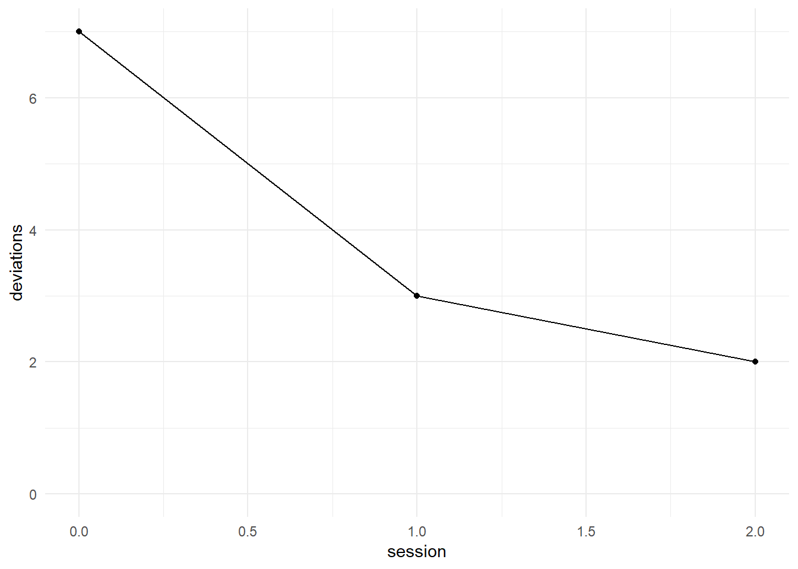
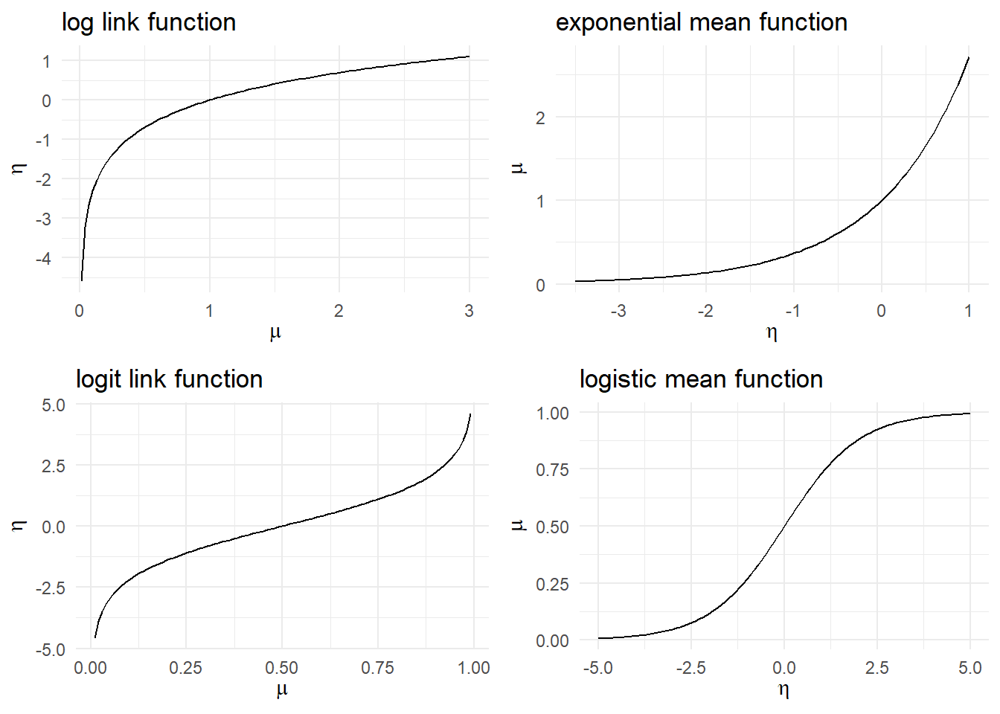
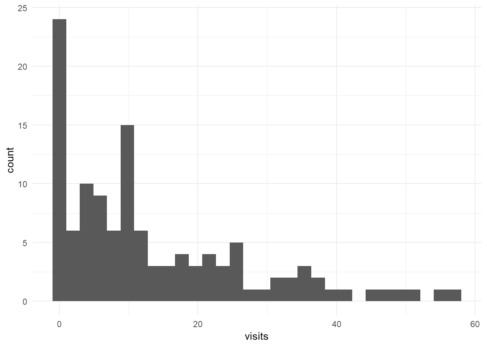
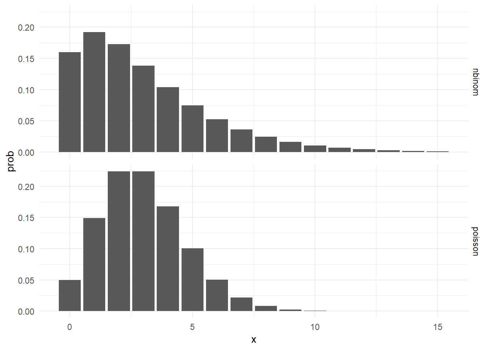
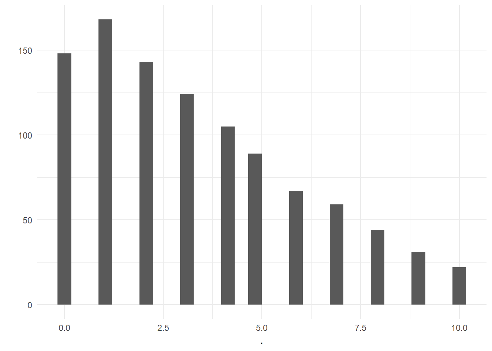
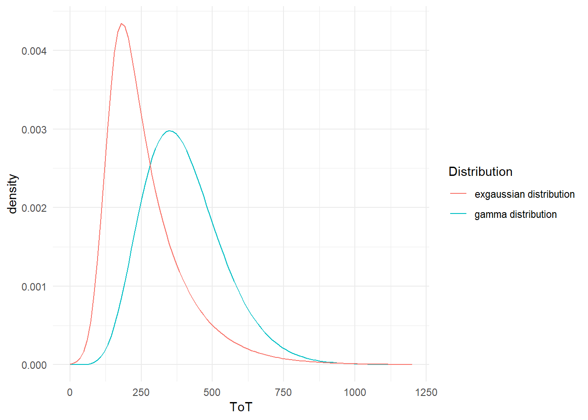
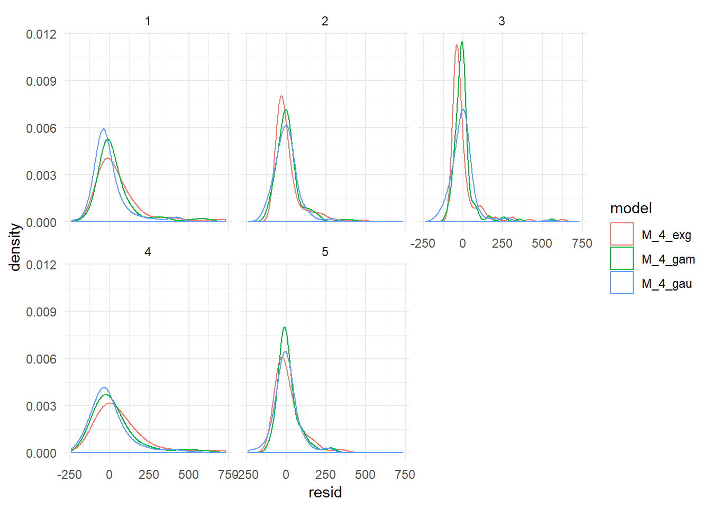
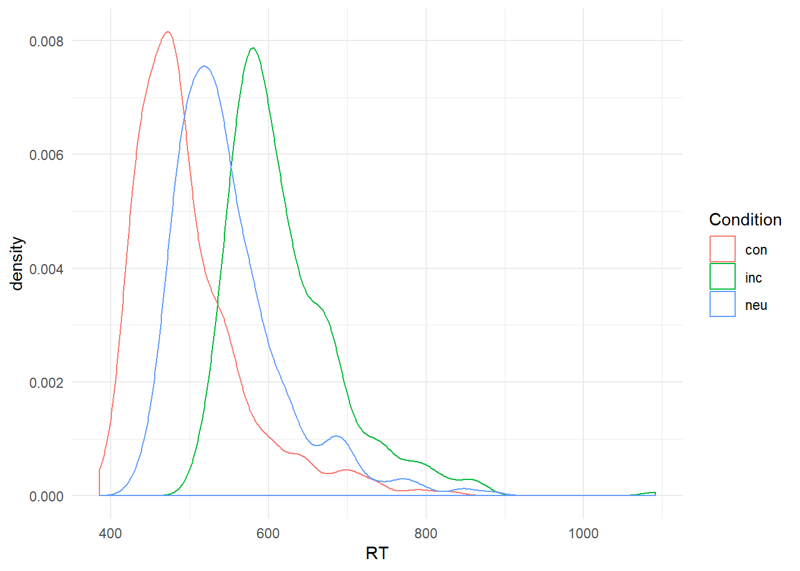
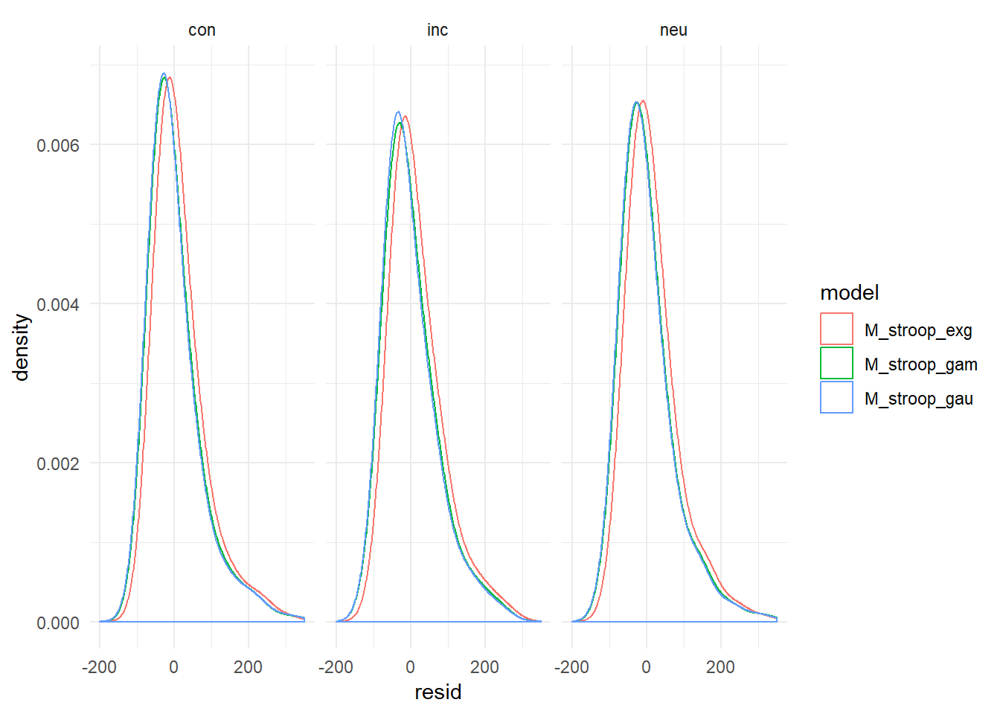
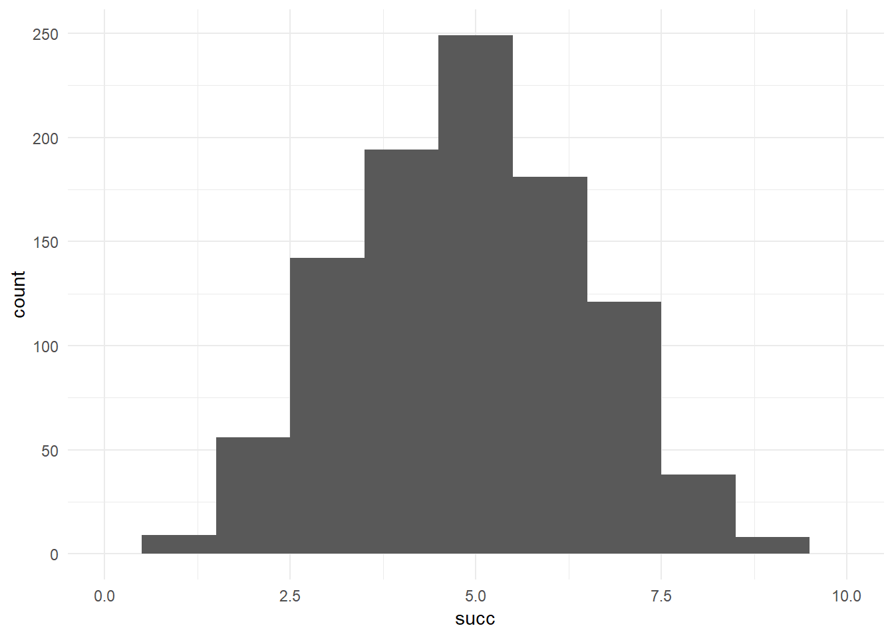

7 Generalized Linear Models
In the preceding chapters we got acquainted with the linear model as an extremely flexible tool to represent dependencies between predictors and outcome variables. We saw how factors and covariates gracefully work together and how complex research designs can be captured by multiple random effects. It was all about specifying an appropriate (and often sophisticated) right-hand side of the regression formula, the predictor term. Little space has been dedicated to the outcome variables. That is now going to change, and we will start by examining the assumptions that are associated with the outcome variable.
Have you wondered about the abundance of simulated data sets up to this point? The reason for using simulated data is: the linear model, as introduced so far, makes assumptions that are never truly met by real data. The simulated data sets so far were meant to demonstrate some features found in real data sets, but generously wiped over some other frequent peculiarities.
Another question is probably lurking in the minds of readers with some classic statistics training: what has happened to the assumptions of ANOVA and the like, and where are all the neat tests that check for Normality, constant variance and such? In the next section we will review these assumptions and lead them ad absurdum. Simply put, in the real world is no such thing as Normal distribution and linearity. Checking assumptions on a model that you know upfront is inappropriate, is a futile exercise, at least when better alternatives are available, and that is the case: with Generalized Linear Models (GLMs) we extend the regression modelling framework once again.
The GLM framework rests on two extensions that bring us a huge step closer to the data. The first one is a minor mathematical trick to establish linearity, the link function. The second is the informed choice about the expected pattern of randomness. As we will see, most of the time it is more or less obvious what statistical distribution, other than the Gaussian, matches the data.
For the impatient: The regression engines rstanarm and brms offer a huge variety of randomness distributions to possibly replace the Gaussian distribution. Having too many choices is not always an advantage, but here it is. In my opinion, most of the time it suffices to know just two or three properties of the outcome variable:
- Is the outcome varible discrete or continuous?
- What are the boundaries of measures?
- In case of discrete data: Can we expect cover-dispersion?
The first two properties are obvious and we already know them when planning the study. And we also do not have to worry about what over-dispersionis even, because it practically always is the case.
In the following three sections I will explain the three core assumptions of linear models, for this recall the canonical model formulation:
\[ \mu_i=\beta_0+ \beta_1 x_{1i}+ …+\beta_k x_{ki}\\ y_i \sim \textrm{Norm}(\mu_i,\sigma) \]
The first term, we call the likelihood and it represents the systematic quantitative relations we expect to find in the data. When it is a sum of products, like above, we call it linear. Linearity is a frequently under-regarded assumption of linear models and it is doomed to fail. The second term defines the pattern of randomness and it hosts two further assumptions: Normal distribution and constant error variance of the random component.
Some classic textbooks tend to present these assumptions as preconditions for a successful ANOVA or linear regression. The very term precondition suggest, that they need to be checked upfront and the classic statisticians are used to deploy a zoo of null hypothesis tests on the data. If one fails, let’s say the Kolmogorov-Smirnoff test on Normality, researchers often turn to non-parametric tests. Many also just continue with ANOVA and add some shameful statements to the discussion of results or bravely cite some research paper that claims ANOVAs robustness to violations.
I have met at least one seasoned researcher who divided the world of data into two categories: parametric data, that meets ANOVA assumptions, and non-parametric that does not. All models (or families) in the present chapter, he would have regarded as non-parametric. Let me get this straight:
First of all, data is neither parametric nor non-parametric. Instead, data is distributed in some form and a good model aligns to this form. A model is parametric, when the statistics it produces have a useful interpretations, like the intercept is the group mean of the reference group and the intercept random effect represents the variation between individuals. The parameters of a polynomial model usually don’t have a direct interpretation. However, we saw that useful parameters, such as the minimum of the curve, can be derived. Therefore, polynomial models are often called semiparametric [CROSSREF]. As an example for a non-parametric test, the Mann-Whitney U statistic is composed of the number of times observations in group A are larger than in group B. The resulting sum U usually bears no relation to any real world process or question. Strictly speaking, the label non-parametric has nothing to do with ANOVA assumptions. It refers to the usefulness of parameters. A research problem, where U as the sum of wins has a useful interpretation could be that in some dueling disciplines, such as Fencing, team competitions are constructed by letting every athlete from a team duel every member of the opponent team. We could call the U-test parametric, and perhaps, the group means turn out to be meaningless.
Here, I will not present any tests on assumptions, other than exploratory plots. Non-parametric tests are completely at odds with the philosophy of this book, as they do not produce parameters that can be interpreted quantitatively. Instead, I will debunk all three assumptions for those type of measures design researchers are routinely dealing with right away. Every assumption that crumbles, rebounces from two new building blocks that add to our regression framework:
- link functions re-establish linearity
- random distributions cover the expected pattern of randomness and the relation of mean and variance
By these two concepts, the GLM framework rises from the ashes of LMs. It hosts a variety of models that leaves little reason for crude approximations, like the Gaussian LM, let alone non-parametric procedures and data transformations. There almost always is a reasonable choice that largely depends on the properties of the response variable: the Poisson LM is the first choice for outcome variables that are counted (with no limit), like number of errors. Binomial (aka logistic) LM covers the case of successful task completion, where counts have an upper boundary. These two GLM members have been around for more than half a century in statistics. The quest for a good model for reaction time and time-on-task was more difficult, as there does not seem to be a generally accepted default. Luckily, with recent developments in Bayesian regression engines the choice of random distributions has become much broader. For RT and ToT, I will suggest primarily the exponentially-modified Gaussian (ExGauss) LM and, to some extent, Gamma LM. Along the way, this very chapter introduces a basic way of choosing between response distributions based on model comparison. For binned rating scales, where responses fall into a few ordered categories, ordinal logistic regression is a generally accepted approach. For (quasi)continuous rating scales will I make a novel suggestion, the Beta LM.
7.1 Debunking the Gaussian linear model
The Gaussian linear model, which we discussed at first, makes many assumptions, where numbers often vary between sources. In my view, the three crucial assumptions are:
- Linearity of the association between predictors and outcome variable.
- Normal distribution of responses
- constant variance of response distribution
Researchers routinely check these assumptions by means of visual exploration or null hypothesis tests. However, on closer examination, it turns out that the first two assumptions strictly cannot be true for any real data, and the third is highly susceptible, at least.
7.1.1 Assuming linearity
Recall the principle, “all-finite-in-the-endless”: when two or more interventions improve the same process, e.g. visual recognition of letters, the sum is less than the summands. This results in a non-linearity when the boundary of performance is reached. With a small set of predictors this can gracefully be modelled as saturation interaction effects.
Consider a study that assesses the improvement of safe operation with continued practice. For simplicity, we regard just a single nurse whose number of errors were measured on a chain of 8 tasks. Errors in operation were measured as number of deviations from the shortest possible interaction sequence.
We simulate a linear model, assuming there is an improvement of one error less with every repetition of the sequence, with expected 7 deviations in the first session. We assume that path deviations has a normally distributed random component with \(\sigma = 1\).
data_frame(session = as.integer(1:5),
mu = 9 - session * 2.5,
deviations = rnorm(5, mu, sd = 1)) %>%
ggplot(aes(x = session,
y = deviations)) +
geom_point() +
geom_abline(aes(intercept = 9, slope = -2.5))
See what happens when the linear model is naively applied to the deviation counts? In no time, negative values are produced, which are impossible. Similar to saturation effects, we would expect some asymptotic behaviour, rather than a straight line, when the outcome variable approaches its natural lower boundary.
Here is some real world data from the IPump study. We take a look at a small slice of it: the total number of deviations of one participant across the three sessions.
attach(IPump)
D_pumps %>%
filter(Part == 5, Design == "Novel") %>%
group_by(Part, session) %>%
summarize(deviations = sum(deviations)) %>%
ggplot(aes(x = session, y = deviations)) +
geom_point() +
geom_line() +
ylim(0,7)
detach(IPump)What really happens when a performance measure approaches its natural limit, is an asymptotic leaning-on. Neither will the line break through the limit, nor will it stop there abruptly.
Such a non-linearity happens to all outcome variables that have natural lower or upper boundaries, and that includes all outcome variables in the universe, except its very own spatial extension, perhaps. All outcome variables in design research suffer from the problem of impossible predictions as a consequence of their boundedness:
- Errors and other countable incidences are bounded at zero
- ToT is bounded at zero and probably also bounded above when users loose their patience
- Rating scales are bounded at the lower and upper extreme item
- Task completion has a lower bound of zero and upper bound is the number of tasks. Or the average task completion is in the range \([0,1]\)
7.1.2 Assuming Normal distribution of randomness
The second term of a linear model, \(y_i \sim Norm(\mu_i, \sigma)\) states that the observed values are drawn from Normal distributions (see @ref(resid_normality)). Two observed values \(y_i\) and \(y_j\) are only drawn from the same distribution, when they have the same expected value \(\mu_i = \mu_j\). The Normal distribution has been used ubiquitously in statistics. But in fact, the Normal distribution is a reasonable approximation when the measures are far off the boundaries of measures and the error is much smaller than the predicted values (@ref(normal_distributions)).
In design research studies this is frequently not the case. We begin with a simulated study comparing a novel and a legacy interface design for medical infusion pumps. The researchers let trained nurses perform a single task on both devices and count the errors. Assuming, the average number of errors per tasks is \(\mu_L = 3\) for the legacy device and \(\mu_N = 1.2\) for the novel device, with standard deviation of \(\sigma = .8\). We can simulate a basic data set as:
N = 80
pumps_2 <-
data_frame(Design = rep(c("L", "N"), N/2),
mu = if_else(Design == "L", 3, 1.2),
errors = rnorm(N, mu, sd = 1))We illustrate the data set using histograms:
pumps_2 %>%
ggplot(aes(x = errors)) +
facet_grid(~Design) +
geom_histogram(bins = 20) +
geom_vline(col = "red", xintercept = 0) +
coord_flip()
The simulated predicted values (\(\mu_i\)) and errors are in a fairly realistic range. Still, we immediatly see, that simulation with Normal distributions is rather inappropriate: a substantial number of simulated observations is negative, which strictly makes no sense for error counts. The pragmatic and impatient reader may suggest to adjust the standard deviation (or move the averages up) to make negative values less unlikely. That would be a poor solution for the following two reasons. First, Normal distributions support the full range of real numbers. There is always a chance of negative simulations, as tiny as it may be. Repeatedly running the simulation until pumps contains exclusively positive numbers (and zero), obviously is poor practice. The second reason is that the simulations very purpose was to express and explore expectations from the linear model (CG). We can simply conclude that any model that assumes normally distributed errors must be wrong when the outcome is bounded below or above, which means: always.
Recall how linearity is gradually bent when a magnitude approaches its natural limit. A similar effect occurs for distributions. Distributions that respect a lower or upper limit get squeezed like chewing gum into a corner when approaching the boundaries. Review Binomial and Poisson distribution in chapter 1 for illustrations. As a matter of fact, a lot of real data in design research is skewed that way, whereas the Normal distribution eternally claims symmetry.
A common misconception is that random distributions approach the Normal distribution with larger sample sizes. The only thing that happens is that increasing the number of observations renders the true distribution more idle. Examine yourself, how the shape of Poisson distributions changes by mean count, as well as sample size. The following code simulates a Poisson distribution with a given \(\lambda\) and \(N\). With every new run of the code, rpois generates a new random set of counts. By repeatedly running this code and watching the output, you can get a good idea of how varied the shape of the distribution can be.
data_frame(count = rpois(n = 20,
lambda = 2)) %>%
ggplot(aes(x = count)) +
geom_histogram()
7.1.3 Assuming constant variance of randomness
The third assumption of linear models is rooted in the random component term as well. Recall, that there is just one parameter \(\sigma\) for the dispersion of randomness and that any Normal distribution’s dispersion is exclusively determined by \(\sigma\). That is less harmless than it may sound. In most real data, the dispersion of randomness depends on the expected value, as can be illustrated by the following example.
Imagine a simple survey where commuters are asked three questions about their daily way to work:
- How long is the route?
- How long does it typically take?
- What are the maximum and minimum travel times you remember?
If we simulate such data from a linear model, the relationship between length of route and travel time would inevitably look like a evenly wide band.
N = 100
data_frame(Obs = as.factor(1:N),
km = runif(N, 2, 40),
min = rnorm(N, km * 2, 10)) %>%
ggplot(aes(x = km, y = min)) +
geom_point() +
geom_quantile(quantiles = c(.25, .5, .75))
It is very unrealistic that persons who live right around the corner experience the same range of possible travel times than people who drive dozens of kilometers. Most of the time, we intuit the dispersion of randomness to increase with the magnitude of the expected value. For example, a Gamma distribution takes two parameters, shape \(\alpha\) and scale \(\tau\) and both of them influence mean and variance of the distribution, such that the variance increases by the mean by square.
\[ X \sim \textrm{Gamma}(\alpha, \theta)\\ E(X) = \alpha \theta\\ \textrm{Var}(X) = \alpha \theta^2\\ \textrm{Var}(X) = E(X) \theta \]
data_frame(Obs = as.factor(1:100),
km = runif(100, 2, 40),
min = rgamma(100, shape = km * .5, scale = 4)) %>%
ggplot(aes(x = km, y = min)) +
geom_point() +
geom_quantile(quantiles = c(.25, .5, .75))
A similar situation arises for count data. When counting user errors, we would expect a larger variance for complex tasks and interfaces, e.g. writing an article in a word processor, as compared to the rather simple situation like operating a medical infusion pump. For count data, the Poisson distribution is often a good choice and for Poisson distributed variables, mean and variance are both exactly determined by the Poisson rate parameter \(\lambda\), and therefore linearly connected.
\[ X \sim \textrm{Poisson}(\alpha, \theta)\\ \lambda = E(X) = \textrm{Var}(X) \]
data_frame(Obs = as.factor(1:100),
Task = rep(c("article", "infusion"), 50),
errors = rpois(100, lambda = if_else(Task == "article", 200, 8))) %>%
ggplot(aes(x = Task, y = errors)) +
geom_boxplot() +
geom_jitter()
Not by coincidence, practically all distributions with a lower boundary have variance increase with the mean. Distributions that have two boundaries, like binomial or beta distributions also have a mean-variance relationship, but a different one. For binomially distributed variables, mean and variance are determined as follows:
\[ X \sim \textrm{Binom}(p, k)\\ E(X) = p k\\ \textrm{Var}(X) = p (1-p) k\\ \textrm{Var}(X) = E(X)(1-p) \]
To see this, imagine a study that examines the relationship between user expertise (for the convenience on a scale of zero to one) and success rate on ten tasks. The result is a cigar-like shape. For binomial distributions, variance gets largest, when the chance of success is centered at \(p = .5\). This is very similar for other distributions with two boundaries, such as beta and logit-normal distributions.
data_frame(expertise = runif(1000, 0, 1),
successes = rbinom(1000, 25, expertise)) %>%
ggplot(aes(x = expertise, y = successes)) +
geom_point()
In conclusion, the Normal distribution assumption is flawed in two ways: real distributions are typically asymmetric and have mean and variance linked. Both phenomena are tightly linked to the presence of boundaries. Broadly, the deviation from symmetry gets worse when observations are close to the boundaries (e.g. low error rates), whereas differences in variance is more pronounced when the means are far apart from each other.
7.2 Elements of Generalized Linear Models
GLM is a framework for modelling that produces a family of models. Every member of this family uses specific link functions to establish linearity and chooses a particular random distribution, that has an adequate shape and mean-variance relationship.
Sometimes GLMs are mistaken as a way to relax assumptions of linear models, (or even called non-parametric). They are definitely not! Every member makes precise assumptions on the level of measurement and the shape of randomness (see Table A). One can even argue that Poisson, Binomial and exponential regression are stricter than Gaussian, as they use only one parameter, with the consequence of a tight association between variance and mean. A few members of GLM are classic: Poisson, Binomial (aka logistic) and exponential regression have routinely been used before they were united under the hood of GLM. These and a few others are called canonical GLMs, as they possess some convenient mathematical properties, that made efficient estimation possible, back in the days of expensive computer time.
7.2.1 Re-linking linearity (#relinking_linearity) [TBC]
The strength of the linear term (the likelihood) is its endless versatility in specifying relations between predictor variables and outcome. Unfortunately, it represents all associations as straight lines. These lines extend from \(-\infty\) to \(\infty\) and will cross the lower or upper boundaries of every known outcome variable. All linear models predict events that cannot happen.
Generalized linear models use a simple mathematical trick to keep the linear term, but confine the expected values to the natural boundaries of the measures. In linear models, the linear term is mapped to expected values, directly, causing the aforementioned problems. In GLMs, a layer is drawn between the expected value \(\mu\) and the linear term, linear predictor \(\theta\). The link function transforms between \(\mu\) and \(\theta\). In order to transform back to the scale of measurement, the inverse of the link function, the mean function is used.
In arithmetics an abundance of functions exists for every possible purpose. However, link functions must fulfill two criteria,
- they must map to the range \([-\infty; \infty]\), as that ensures linearity
- they must be monotonically increasing
Intuitively speaking, a monotonically increasing function preserves the order in magnitude, such that the following holds for a link function.
\[ \mu_a > \mu_b \rightarrow \theta_a > \theta_b \]
The primary reason for this requirement is that for a link function \(\phi\) there must exist the inverse, that is the mean function (\(\phi^{-1}\)). A function that is not monotonically increasing, such as \(x^2\) does not have an inverse function. For example, \(x^2\) is not a proper link function, because its inverse, \(\sqrt{x}\) can take two values (e.g. \(\sqrt{x} = [2, -2]\)) and therefore is not a function, strictly speaking.
An adequate link function for count variables would map the range of natural numbers to the linear range of \(\eta\) that is \([-\infty; \infty]\). The logarithm is such a function and its inverse is the exponential function, which bends the linear range back into the boundary. Figure XY shows them side-by-side. Note that the logarithm is not asymptotic as it may seem. This function truly approaches infinity, albeit at a decelerating pace (which is mind-boggling). Other variables, like success rates or rating scales, have lower and upper boundaries. A suitable pair of functions is the logit link function and the logistic mean function.
plot_glmfun <- function(f = log,
title = "log link function",
lower = .01, upper = 3,
dir = "link"){
out <-
data_frame(x = seq(lower, upper, (upper - lower)/100)) %>%
ggplot(aes(x)) +
stat_function(fun = f) +
labs(title = title) +
labs(x = expression(mu), y = expression(eta))
if(dir == "mean") out <- out + labs(x = expression(eta),
y = expression(mu))
out
}
gridExtra::grid.arrange(
plot_glmfun(),
plot_glmfun(f = exp, "exponential mean function", -3.5, 1, dir = "mean"),
plot_glmfun(f = logit, "logit link function", 0.01, .99),
plot_glmfun(f = inv_logit, "logistic mean function", -5, 5, dir = "mean"))
Using the link function comes at a cost: the linear coefficients \(\beta_i\) no longer has a natural interpretation, like “moving one unit on the predictor lets the outcome change by \(\beta_i\)”. Later we will see that logarithmic and logit scales gain an intuitive interpretation when parameters are exponentiated, \(\textrm{exp}(\beta_i)\) (7.4.1 and ??
7.2.2 Choosing patterns of randomness (#choosing_randomness)
In chapter 3.3.2 a number of random distributions were introduced, together with conditions of when they arise. The major criteria were related to properties of the outcome measure: how it is bounded and whether it is discrete (countable) or continuous.
In GLMs, the researcher has a larger choice for modelling the random component and Table XY lists some common candidates.
| boundaries | discrete | continuous |
|---|---|---|
| unbounded | NA | Normal |
| lower | Poisson | Exponential |
| lower and upper | Binomial | Beta |
That is not to say that these five are the only possible choices. Many dozens of statistical distributions are known and these five are just making the least assumptions on the shape of randomness in their class (mathematicians call this maximum entropy distributions). In fact, we will soon discover that real data frequently violates principles of these distributions. For example, count measures in behavioural research typically show a variance that exceeds the mean, which speaks against the Poisson distributions. As we will see in ?? and 7.4.1.3, Poisson distribution can still be used in such cases with some additional tweaks.
As we will see, response times in design research are particularly misbehaved, as they do not have their lower boundary at zero, but at the lowest human possible time. In contrast, most continuous distributions assume that measures near zero are at least possible. In case of response times, we will take advantage of the fact, that modern Bayesian estimation engines support a large range of distributions, by far exceeding the available choices in asymptotic methods of frequentist statistics . The stan_glm regression engine has been designed with downwards compatibility in mind, which is why it only includes the classic distributions. Luckily, there is a sibling engine in the package brms, which is more progressive and gives many more choices.
Still, using distributions that are not Gaussian sometimes carries minor complications. Normal distributions have the convenient property that the amount of randomness is directly expressed as the parameter \(\sigma\). That allowed us to compare the fit of two models A and B by comparing \(\sigma_A\) and \(\sigma_B\) (note, however that this is not a rigorous method for model selection). In random distributions with just one parameter, the random component is either determined by the location (e.g. Poisson \(\lambda\) or Binomial \(p\)). For distributions with more than one parameter, dispersion of randomness typically is a function of two or more parameters. For example, Gamma distributions have two parameters, but these do not pull location and dispersion neatly apart as Normal distributions do. Instead, mean and variance Gamma distributions depend on both parameters.
Using distributions with entanglement of location and dispersion seems to be a step back, but frequently it is necessary to render a realistic association between the expected value and amount of absolute randomness. Most distributions with a lower bound (e.g. Poisson, exponential and Gamma) increase variance with mean, whereas double bounded distributions (beta and binomial) typically have maximum variance when the distribution is centered and symmetric.
7.3 Case: user testing infusion pumps
Medical infusion pumps are unsuspicious looking devices that are en-mass installed in surgery and intensive care. Their only purpose is controlled injection of medication in the blood stream of patients. Pumps are rather simple devices as infusion is not more than a function of volume and time. They are routinely used by trained staff, mostly anaesthesiologists and nurses. We should have great faith in safe operation under such conditions. The truth is, medical infusion pumps have reportedly killed dozens of people, thousands were harmed and an unknown number of nurses lost their jobs. The past generation of pumps is cursed with a chilling set of completely unnecessary design no-gos:
- tiny 3-row LCD displays
- flimsy foil buttons without haptic marking or feedback
- modes
- information hidden in menus
For fixing these issues no additional research is needed, as the problems are pretty obvious to experienced user interface designers. What needs to be done, though, is proper validation testing of existing and novel interfaces, for example:
- is the interface safe to use?
- is it efficient to learn?
- is a novel interface better than a legacy design? And by how much?
We conducted such a study. A novel interface was developed after an extensive study of user requirements and design guidelines. As even the newest national standards for medical devices do not spell precise quantitative user requirements (such as, a nurse must be able to complete a standard task in t seconds and no more than e errors may occur), the novel interface was compared to a device with a legacy design. The participants were nurses and they were asked to complete a set of eight standard tasks with the devices. In order to capture learnability of the devices, every nurse completed the sequence of tasks in three consecutive sessions. A number of performance measures were recorded to reflect safety and efficiency of operation:
- task completion: for every task it was assessed whether the nurse had completed it successfully.
- deviations from optimal path: using the device manual for every task the shortest sequence was identified that would successfully complete the task. The sequence was then broken down into individual operations that were compared to the observed sequence of operations. An algorithm called Levenshtein distance was used to count the number of deviations.
- time on task was recorded as a measure for efficiency.
- mental workload was recorded using a one-item rating scale.
As can be expected in the light of what has been said above, each one these measures violate one or more assumptions of the Gaussian linear model. In the following chapters, proper models from the GLM family are introduced for commonly occuring measures:
- count data, such as the number of completed tasks and path deviations
- temporal data, such as time-on-task
- rating scales
7.4 Count data
Normal distributions assume that the random variable under investigation is continuous. For measures, such as time, it is natural and it can be a reasonable approximation for measures with fine-grained steps, such as average scores of self-report scales with a large number of items. Other frequently used measures are clearly, i.e. naturally, discrete, in particular everything that is counted. Examples are: number of errors, number of succesfully completed tasks or the number of users. Naturally, count measures have a lower bound and frequently this is zero. A distinction has to be made, though, for the upper bound. In some cases, there is no well defined upper bound, or it is very large (e.g. number of users) and Poisson regression applies. In other cases, the upper bound is given by the research design, for example the number of tasks given to a user. When there is an upper bound, logistic regression applies.
7.4.1 Poisson regression
If data can be considered successes in a fixed number of trials, logistic regression is the model type of choice. When the outcome variable is of type count, but there is no apparent upper limit, Poisson regression applies.
In brief, Poisson regression has the following attributes:
- The outcome variable is bounded at zero (and that must be a possible outcome, indeed).
- The linear predictor is on a logarithmic scale, with the exponential function being the inverse.
- The random component follows a Poisson distribution.
- Variance of randomness increases linearly with the mean.
The link function is the logarithm, as it transforms from the non-negative range of numbers to real numbers. For a start, we have a look at a Poisson GMM: In an advanced level of the smart smurfer game , the items are hidden from the player and therefore extremely difficult to catch. To compensate somewhat for the increased difficulty, the level carries an abundance of items. On average, the player is not supposed to find more than three items. We simulate a data set for one player repeating the level 30 times and run a Poisson regression model:
set.seed(6)
D_Pois <-
data_frame(Obs = 1:30,
items_found = rpois(30, lambda = 3.4))
D_Pois %>%
ggplot(aes(x = items_found)) +
geom_histogram()
M_Pois <-
stan_glm(items_found ~ 1,
family = poisson,
data = D_Pois, iter = iter)fixef(M_Pois)| model | type | fixef | center | lower | upper |
|---|---|---|---|---|---|
| object | fixef | Intercept | 1.31 | 1.16 | 1.48 |
# bayr:::knit_print.tbl_coef(M_Pois)The Poisson parameter \(\lambda\) (lambda) has a direct interpretation as it represents the expected mean (and variance) of the distribution. On the contrary, the regression coefficient is on a logarithmic scale to ensure it has no boundaries. To scale it down to the scale of measurement, the exponential function is the canonical mean function in Poisson regression:
fixef(M_Pois, mean.func = exp)| model | type | fixef | center | lower | upper |
|---|---|---|---|---|---|
| object | fixef | Intercept | 3.72 | 3.18 | 4.41 |
The exponentiated intercept coefficient can be interpreted as the expected number of items found per session. Together with the credibility limits it would allow the conclusion that the items are slightly easier to find than three per session.
7.4.1.1 Speaking multiplicative
To demonstrate the interpretation of coefficients other than the intercept (or absolute group means), we turn to the more complex case of the infusion pump study. In this study, the deviations from normative path were counted to serve as a measure for safety of operation. In the following regression analysis, we examine the reduction of deviations by training sessions as well as the differences between the two devices. As we are interested in the improvement from first to second session and second to third, successive difference contrasts apply.
attach(IPump)M_dev <-
stan_glmer(deviations ~ Design + session + session:Design +
(1 + Design + session|Part) +
(1 + Design|Task) +
(1|Obs), ## observation-level ramdom effect
family = poisson,
data = D_pumps, iter = iter)
M_devfixef(M_dev)| fixef | center | lower | upper |
|---|---|---|---|
| Intercept | 0.838 | 0.311 | 1.362 |
| DesignNovel | -1.511 | -2.247 | -0.780 |
| session | -0.233 | -0.350 | -0.139 |
| DesignNovel:session | -0.081 | -0.242 | 0.113 |
Again, the coefficients are on a logarithmic scale and cannot be interpreted right away. By using the exponential mean function, we obtain the following table:
fixef(M_dev, mean.func = exp)| fixef | center | lower | upper |
|---|---|---|---|
| Intercept | 2.312 | 1.365 | 3.904 |
| DesignNovel | 0.221 | 0.106 | 0.459 |
| session | 0.792 | 0.705 | 0.870 |
| DesignNovel:session | 0.922 | 0.785 | 1.120 |
The intercept now has the interpretation as the expected number of deviations with the legacy design in the first session. However, it is incorrect to speak of the effects in terms of differences. i.e. summative. Fortunately, the following arithmetic law tells that what is summative on the level of the linear predictor, becomes multiplicative on the original scale:
\[ \exp(\beta_0 + x_1\beta_1 + x_2\beta_2) = \exp(\beta_0) \exp(x_1\beta_1) \exp(x_2\beta_2) \]
Hence, the exponentiated coefficients have a multiplicative interpretation, like the following:
- In the first session, the novel design produces 2.312 times the deviations than with the legacy design.
- For the legacy design, every new training session reduces the number of deviations by factor 0.792
- The reduction rate per training session of the novel design is *92.229% as compared to the legacy design.
With counts, we usually expect the variance of randomness to rise with the mean. The Poisson distribution is very strict in the sense that the variance equals the mean.
\[ y_i \sim \textrm{Pois}(\lambda) \rightarrow \textrm{Var}(x_i) = \textrm{Mean}(x_i) = \lambda \]
Real count data frequently has variance that raises proportionally with the mean, but is inflated. This is called overdispersion and is accounted for by an observation-level random effect, which will be explained in a separate section ??.
Hence, the novel design reduces the initial number of deviations by factor
detach(IPump)7.4.1.2 Monotony and quantiles
The transformation of coefficients to the original scale has been applied to the point and range estimates as produced by the fixef command, that is after summarizing the posterior distribution. One may wonder if this is valid. Would we get the same estimates when applying the mean function to all draws of the MCMC chain and then summarize? The general answer is that applying the mean function after summarizing is allowed if the summary function is invariant under the exponential function.
For all GLM, the link and mean functions are monotonically increasing, with the consequence that the order of observations is preserved. Formally, for any two MCMC iterations \(i\) and \(j\) for a parameter \(\beta_i\):
\[ \beta_{1i} < \beta_{1j} \rightarrow \exp(\beta_{1i}) < \exp(\beta_{1j}) \]
Recall that throughout this book, center and interval estimates have been obtained by simple quantiles, marking the points where 2.5%, 50% and 97.5% of all iterations are smaller. Order does not change with monotonous transformations, if 2.5% (50%, 97.5%) of draws are smaller on the linear scale, they will still be after applying the mean function. Quantiles are not affected by monotonous transformation and transformation after summary is therefore valid. Some researchers prefer the mode of the posterior to represent its center location. The mode is the point of highest density and does not rely on ranks, it is therefore even invariant under all transformations that preserve identity.
This is different for higher order methods for obtaining point and interval estimates. Most notably the mean and the highest posterior density intervals are not invariant to mean functions. When using those, the mean function must be applied before summarizing the posterior, which is inconvenient and inconsistent.
7.4.1.3 Zero inflation
Imagine a study that examines the frequency of visits to the social media website Fakebook . While other researchers already set out to find predictive factors, like extrovert personality and the like, we are here interested in the frequency of daily use.
sim_zi <- function(
beta_0 = 2.5,
N_Part = 120,
p_zero = .2, # proportion of non-users
sd_Part = 0.8, # individual differences (lp scale)
seed = 23 # parameters passed on to simulate_1
){
set.seed(seed)
data_frame(Part = 1:N_Part,
theta = rnorm(N_Part, beta_0, sd_Part),
mu = exp(theta),
is_user = rbinom(N_Part, 1, 1 - p_zero),
visits = 0 + is_user *rpois(N_Part, mu))
}
D_zi <- sim_zi()
D_zi %>%
ggplot(aes(x = visits)) +
geom_histogram()
## [1] "sim_zi" "D_zi"7.4.2 Logistic (aka Binomial) regression (#logistic_regression)
When the outcome variable can be conceived as successes in a fixed number of trials, logistic regression applies. In brief, logistic regression has the following attributes:
- The outcome variable is bounded at zero and the number of trials \(k\)
- The linear predictors are on a logistic scale, with the logit being the inverse. However, in 7.4.2.1 we will see, that using the logarithm results in a convenient way of speaking about the effects.
- The random component follows a binomial distribution.
- Due to the former, the variance of randomness is largest at \(\mu = 0.5\) or \(\eta = 1\) and declines towards both boundaries, taking a characteristic cigar shape.
The most simple form of successes-in-trials measure is when there is only one trial. This is called dichtotomous, with the following common examples:
- a user is successful at a task, or fails
- a visitor returns to a website or does not
- a usability problem is discovered or remains unseen
- a driver brakes just in time or crashes
- a customer would recommend a product to a friend or rather not
- a web user starts a search for information by keyword query or by following links
Most dichotomous outcome variables have a more or less clear notion of success and failure (although not necessarily as in the last example). When the outcome casts a positive light on the design, by convention it is coded as 1, otherwise 0.
In computer science jargon, every dichotomous observation accounts to a bit, which is the smallest amount of information ever possible. Since in inferential statistics the amount of information is tantamount to the reduction in uncertainty, with dichotomous data one usually needs an abundance of observations to reach reasonably certain conclusions. Because the information of a single observation is so sparse, large samples and repeated measures are important when dealing with dichtomous outcomes.
Let us consider an example: early research on foraging strategies of web users revealed that they are extremely impatient companions. They scan a page for visual features, rather than reading [REF: high school students information mall]. Visitors of websites build their first judgement in a time as short as 17ms [REF: Tuch presentation time]. For e-commerce that is a highly important fact to know about their customers and nowadays practically all commercial websites shine with a pleasing visual appearance. But, how would one measure the gratitude of a visitor who actually used the website and may have something to tell beyond visual appeal?
A simple measure for gratitude is whether a visitor returns. This is usually a highly available measure, too, as any skilled web administrators can distill such data from the server logfiles with little effort. First, all unique visitors are extracted and if the same visitor returns within a given period of time, this is coded as a success (one) or otherwise failure (zero). We simulate such a data set:
set.seed(42)
D_ret <- data_frame(visitor = as.factor(1:100),
returned = rbinom(100, 1, .4))
D_ret %>% sample_n(6) %>% kable()| visitor | returned |
|---|---|
| 63 | 1 |
| 22 | 0 |
| 99 | 1 |
| 38 | 0 |
| 91 | 1 |
| 92 | 0 |
D_ret %>%
ggplot(aes(x = returned)) +
geom_bar()
In total, 46% of the visitors return. In order to estimate the return rate together with a statement on uncertainty, we run a logistic regression grand mean model and inspect the coefficient table. Note how the linear formula is completely common ground, but we explicitly pass the binomial family to the regression engine.
M_ret <- D_ret %>% stan_glm(returned ~ 1, data = .,
family = binomial, iter = iter) # <--fixef(M_ret)| model | type | fixef | center | lower | upper |
|---|---|---|---|---|---|
| object | fixef | Intercept | -0.148 | -0.542 | 0.211 |
As expected from a GMM we retrieve one parameter that reflects the average tendency to return to the site. Recall, that the linear model assumes the predictions to be unbounded. However, in case of return rates, we rather speak of proportions of users to return. As a side note, I would rather avoid speaking of probabilities in the context of logistic regression. While being mathematically correct, it sometimes causes confusion with certainty or, beware of this, the p-value.
Proportions are on a range from zero to one. Because the quantity of interest is bounded, a link function is needed that stretches the bounded into an unbounded range. For logistic regression, the logit functions maps the expected values \(\mu_i \in [0;1]\) onto the linear predictor scale \(\eta_i \in [-\infty; \infty]\):
\[ \eta_i = \textrm{logit}(\mu_i) \]
The inverse function, commonly called the mean function, of the logit is the logistic function. @ref(logit_logist) shows link and mean functions side-by-side.
grid.arrange(
ggplot(data.frame(mu=c(0, 1)), aes(x = mu)) +
stat_function(fun = mascutils::logit) +
xlab(expression(mu)) + ylab(expression(eta)) +
ggtitle("logit link function"),
ggplot(data.frame(eta=c(-5, 5)), aes(x = eta)) +
stat_function(fun = mascutils::inv_logit) +
xlab(expression(mu)) + ylab(expression(eta)) +
ggtitle("logistic mean function"),
nrow = 1)
In order to obtain a statement on proportion \(\mu\) (note that in a GMM, there is only one), we therefore have to perform the mean transformation:
\[
\eta = \beta_0\\
\mu = \textrm{logist}(\eta)
\] The fixef command lets you pass on a mean function. However, this logistic mean function is only admissable for intercepts and other absolute group means, as we will see in 7.4.2.1
fixef(M_ret, mean.func = inv_logit)| model | type | fixef | center | lower | upper |
|---|---|---|---|---|---|
| object | fixef | Intercept | 0.463 | 0.368 | 0.553 |
The apt reader may have noticed that the returners data set has been simulated with an exact return rate of 40%. Despite the sample size of 100, the center estimate seems rather off and hampered by considerable uncertainty. That is precisely because of the low level of information contained in dichotomous variables (one bit). For a reasonably certain estimate one would need many more observations. These can either be obtained through a larger sample or through repeated measures.
Recall the fictional jump-and-run game smart smurfer in @ref(poisson_dist): the goal of the game is that players collect items and for the user experience it is crucial that this is neither too difficult nor too easy. Imagine, that for adjusting the difficulty level, the developers conduct a quick evaluation study, where they place a number of items (trials) in the game and the success rate of a single player is observed in a series of 15 game sessions:
D_smrf <-
data_frame(
Session = 1:15,
trials = round(runif(15, 0, 25), 0),
successes = rbinom(15, trials, .4),
failures = trials - successes) %>%
mascutils::as_tbl_obs()
D_smrfPer session the player has a number of opportunities for collecting an item, which makes it a repeated measures situation. One might expect that we need to include random effects into the model. Later we will see that this is necessary when the sessions were observed on a sample of players with different abilities. However, as long as one can reasonably assume the chance of catching an item to be constant across all sessions, plain logistic regression can deal with successes in multiple trials. In order to estimate a model with more than one trial per observation, it is necessary to add a variable for the number of failures and use a cbind(successes, failures) statement for the left-hand-side of the model formula. This may seem inconvenient, but it allows to have a different number of trials per observation.
M_smrf <- stan_glm(cbind(successes, failures) ~ 1,# <--
family = binomial,
data = D_smrf, iter = iter)fixef(M_smrf, mean.func = inv_logit)| model | type | fixef | center | lower | upper |
|---|---|---|---|---|---|
| object | fixef | Intercept | 0.485 | 0.418 | 0.559 |
## [1] "D_smrf" "D_ret"We turn now to a real case study, the comparison of two medical infusion pumps (@ref(slope_RE)). On both devices (legacy and novel), 25 nurses completed a set of eight tasks repeatedly over three sessions. In @ref(slope_RE) a multi-level model was estimated on the workload outcome. It is tempting to apply the same structural model to success in task completion, using binomial random patterns and logit links.
completion ~ Design*Session + (Design*Session|Part) + (Design*Session|Task)Such a model is practically impossible to estimate, because dichtomous variables are so scarce in information. Two populations encounter each other in the model: participants and tasks, with 6 observations per combination (6 bit). We should not expect to get reasonably certain estimates on that level and, in fact, the chains will not even mix well. The situation is a little better on the population level: every one of the six coefficients is estimated on 400 bit of raw information. We compromise here: we estimate the full model on group level and do only intercept random effects to account for gross differences between participants and tasks.
attach(IPump)M_cmpl <-
D_pumps %>%
stan_glmer(completion ~ Design * Session +
(1|Part) + (1|Task),
family = binomial,
data = ., iter = iter)
sync_CE(IPump, M_cmpl)T_cmpl <-
fixef(M_cmpl)
T_cmpl| fixef | center | lower | upper |
|---|---|---|---|
| Intercept | 1.367 | 0.242 | 2.497 |
| DesignNovel | 0.398 | 0.116 | 0.710 |
| Session2-1 | 0.694 | 0.155 | 1.223 |
| Session3-2 | -0.062 | -0.602 | 0.492 |
| DesignNovel:Session2-1 | -0.281 | -1.066 | 0.520 |
| DesignNovel:Session3-2 | 0.272 | -0.543 | 1.006 |
Keep in mind that the estimates are on the scale of the linear predictor \(\eta_i\). This is a boundless space, where we can freely create linear combinations of effects to obtain group means. To get a group mean prediction on the more meaningful measurement scale \(\mu \in [0;1]\), one must first do the linear combination, followed by the mean function.
- the completion rate in the first legacy session is 0.797
- in novel/session 1:
logist(Intercept + DesignNovel)= 0.854 - in novel/session 2:
logist(Intercept + DesignNovel + Session2-1 + DesignNovel:Session2-1)= 0.898 - in legacy/session 3:
logist(Intercept + DesignNovel + Session2-1)= 0.881
7.4.2.1 Talking odds
When presenting results of a statistical analysis, the linear predictor is likely to cause trouble, at least when the audience is interested in real quantities. The linear predictor scale has only very general intuition:
- zero marks a 50% chance
- positive values increase the chance, negative decrease
- bigger effects have larger absolute values
That is sufficient for purely ranking predictors by relative impact (if on a comparable scale of measurement), or plain hypothesis testing, but it does not connect well with quantities a decision maker is concerned with, for example:
- What is the expected frequency of failure on first use?
- The novel design reduces failures, but is it sufficient?
- Is frequency of failures reduced to an acceptable level by two training sessions?
Above we have used the mean logistic mean function to elevate the absolute group means to proportions. This is an intuitive scale, but unfortunately, the mean function does not apply to individual effects. It is for example, incorrect to apply it like: “the novel pumps proportion of failures in the first session increases by logist(DesignNovel) = 0.598”.
However, there is another transformation, that does the trick. For a better understanding, we have to first inspect, what the logit actually is. The logit is also called a log-odds: \(\textrm{logit}(p) := \log(p(1-p))\). The inner part of the function, the odds, are the chance of success divided by the chance of failure. Odds are a rather common way to express ones chances in a game, say:
- odds are 1 against 1 that the coin flip produces Head. If you place €1 on Head, I put €1 on tail.
- odds are 1 against 12 that Santa wins the dog race. If you place 1€ on Santa, I place €12 against.
If the coefficients are log-odds, than we can extract the odds by the inverse of the logarithm, the exponential function, like in the following call of fixef:
T_fixef_cmpl_odds <- fixef(M_cmpl, mean.func = exp)
T_fixef_cmpl_odds| fixef | center | lower | upper |
|---|---|---|---|
| Intercept | 3.922 | 1.274 | 12.14 |
| DesignNovel | 1.489 | 1.123 | 2.03 |
| Session2-1 | 2.001 | 1.167 | 3.40 |
| Session3-2 | 0.940 | 0.548 | 1.64 |
| DesignNovel:Session2-1 | 0.755 | 0.344 | 1.68 |
| DesignNovel:Session3-2 | 1.312 | 0.581 | 2.73 |
But is it legitimate to apply the transformation on individual coefficients in order to speak of changes of odds? The following arithmetic law tells that what is a sum on the log-odds scale, is multiplication on the scale of odds:
\[ \exp(x + y) = \exp(x)\exp(y) \]
Consequently, we may speak of changes of odds using multiplicative language:
- If you place €100 on failure in the next task with the legacy design in session 1, I place €392.214 on success.
- The odds of success with the novel design increase by factor 1.489. Now, I would place \(392.214 \times 1.489\) = €583.99 on success.
- On success with the novel design in session 2, I would place \(392.214 \times 1.489 \times 2.001 \times 0.755\) = €882.124 on success.
Once, we have transformed the coefficients to the odds scale, we can read coefficients as multipliers and speak of them in hard currency.
detach(IPump)7.4.3 Modelling overdispersion
If you are in a hurry: real data is always overdispersed. If your data is real, prefer the negative binomial family over Poisson and beta-binomial over logistic regression. Or do observation-level random effects.
Poisson and binomial distributions are one-parameter distributions. As there is only one parameter, it is impossible to set location and dispersion separately. In effect, both properties are tightly entangled. For Poisson distributions they are even the same.
\(x \sim Pois(\lambda) \implies \mu = \sigma^2 = \lambda\)
For binomial variables, mean and variance both depend on probability \(p\) and are entangled in cigar shaped form, as the dispersion shrinks when approaching either two boundaries.
The strict variance assumptions of Poisson and binomial models are frequently violated by real data. The violation happens when impact factors have not been included in the likelhood equation. Whenever there is one or more impact factors on the outcome at question that the researcher has not regarded, overdispersion inevitably happens. That means it practically always happens in studies involving objects with complex dynamics, such as the human mind.
Two solutions exist for overdispersed count data: we can either switch to an appropriate two parameter response distribution, that disentangles mean and variance, or introduce an observation-level random effect.
7.4.3.1 Negative-binomial regression for overdispersed counts
For all three one-parameter distributions, there exists a two-parameter distribution that allows to estimate the amount of random dispersion (almost) independently of the mean.
readxl::read_excel("Illustrations/GLM_distributions.xlsx", sheet = "plugin")| canonical | generalization | parameters | limiting case |
|---|---|---|---|
| binomial | betabinomial | \(\alpha > 0, \beta > 0\) | \(\alpha, \beta \rightarrow \infty\) |
| Poisson | negative binomial | NA | NA |
| exponential | gamma | rate, shape | NA |
Using Poisson regression for overdispersed count data results in too narrow certainty of estimates, which is a mistake, of course, because of overfitting. One solution to the problem is to switch to yet another response distribution that has a second parameter, thereby allowing the variance to vary (almost) freely. For the Poisson case (i.e. counts without an upper limit) that typically is the negative binomial distribution (never mind its name!), for binomial the beta-binomial applies. Both distributions are so-called mixture distributions. In mixture distributions, the parameter of the original distribution is not constant, but allowed to vary, typically according to some other distribution. Under this perspective, negative binomial distribution is equivalent to a Poisson distribution, if we let parameter \(\lambda\) follow a certain gamma distribution:
rnegbinom <- function(n, mu, size){
shape = size
scale = mu/size
lambda = rgamma(n, shape = shape, scale = scale)
rpois(n, lambda = lambda)
}
rnegbinom(1000, mu = 3, size = 2) %>% qplot()
The figure below shows a negative binomial distribution and Poisson distribution with the same mean.
data_frame(x = 0:15,
nbinom = dnbinom(x, mu = 3, size = 2),
poisson = dpois(x, 3)) %>%
gather(distribution, prob, -x) %>%
ggplot(aes(x = x, y = prob)) +
facet_grid(distribution ~ .) +
geom_col(position = "dodge")
7.4.3.2 Beta-binomial regression for successes in trials
For beta-binomial distributions, the binomial parameter \(p\) is mixed from a beta distribution, with parameters \(a\) and \(b\):
rbetabinom <- function(n, size, a, b) rbinom(n, size, rbeta(n, a, b))
rbetabinom(1000, 10, 1, 2) %>% qplot()
Predictions and interpretation of coefficients of negative-binomial and beta-binomial models are just as with their counterparts, using the same link functions. There is just a tiny difference: a single parameter has been added to the model, which modifies the dispersion. In a standard analysis these parameters have very little meaning, even less than the standard error in a Gaussian model. No misunderstanding: these parameters are not the constant standard deviation of residuals. They act as scalers for the “natural” dispersion at any point.
The brms regression engine currently only implements the negative binomial, but not the beta-binomial family. That is a minor problem, because the brms regression engine can be extended. The following code is directly taken from the brms documentation and provides a betabinomial model. The canonical parametrization of the betabinomial distribution takes the parameters a and b from the inner beta distribution. Note, how the author of this code transforms the parameters to obtain an expected value \(\mu\) and a dispersion parameter \(\phi\). Like in logistic regression, coefficients are on a logit scale.
# define a custom beta-binomial family
beta_binomial2 <- custom_family(
"beta_binomial2", dpars = c("mu", "phi"),
links = c("logit", "log"), lb = c(NA, 0),
type = "int", vars = "trials[n]"
)
# define custom stan functions
bb_stan_funs <- "
real beta_binomial2_lpmf(int y, real mu, real phi, int N) {
return beta_binomial_lpmf(y | N, mu * phi, (1 - mu) * phi);
}
int beta_binomial2_rng(real mu, real phi, int N) {
return beta_binomial_rng(N, mu * phi, (1 - mu) * phi);
}
"
D_betabin <- data_frame(y = rbetabinom(100, 10, 4,2), n = 10)
M_betabin <- D_betabin %>%
brm(y | trials(n) ~ 1, family = beta_binomial2,
stan_funs = bb_stan_funs, data = .)coef(M_betabin)| parameter | type | fixef | center | lower | upper |
|---|---|---|---|---|---|
| b_Intercept | fixef | Intercept | 0.876 | 0.676 | 1.08 |
7.4.3.3 Using observation-level random effects
With the broad implementation of random effects models in Bayesian regression engines, there is a generic procedure to capture the extra variance even with one parameter distributions. The trick is to introduce an observation-level random effect (OLRE). Recall how we regard variation between members of a population as normally distributed deviations from the population mean, by the example of a Poisson grand mean model with a participant-level (\(p\)) random effect:
\[ \theta_{pi} = \beta_0 + x_p\beta_{0p} \\ \mu_{pi} = \exp(\theta_{pi})\\ \beta_{0p} \sim N(\mu_{p}, \sigma_p)\\ y_{p} \sim \textrm{Pois}(\mu_{ij}) \]
The OLRE is normally distributed but does not cause any bounded range, as it is added on the level of the linear predictor before applying the exponential transformation. Observation-level random effects are completely analogous, except that every observation becomes its own group, in a Poisson grand mean model with added variation:
\[ \theta_{i} = \beta_0 + \beta_{i} \\ \mu_i = \exp(\theta_i)\\ y_{ij} \sim \textrm{Pois}(\mu_{ij}) \]
See, how \(\beta_i\) is a unique deviation per observation \(i\), and how a variance parameter \(\sigma\) appears in an otherwise purely Poisson model. Observation-level random effects are on the linear predictor level, and therefore additive. Compare this to the negative binomial distribution where variance is scaled up, which is multiplication. We find a resemblance with how sums on the linear predictor become multiplications on the expected values scale.
For demonstration of the concept, we simulate from an overdispersed Poisson grand mean model with participant-level random effects, and recover it via regression.
sim_ovdsp <- function(
beta_0 = 2, # mu = 8
sd_Obs = .3,
sd_Part = .4,
N_Part = 30,
N_Rep = 20,
N_Obs = N_Part * N_Rep,
seed = 42){
set.seed(seed)
Part <- data_frame(Part = 1:N_Part,
beta_0p = rnorm(N_Part, 0, sd_Part)) ## participant-level RE
D <- data_frame(Obs = 1:N_Obs,
Part = rep(1:N_Part, N_Rep),
beta_0i = rnorm(N_Obs, 0, sd_Obs), ## observeration-level RE
beta_0 = beta_0) %>%
left_join(Part) %>%
mutate(theta_i = beta_0 + beta_0p + beta_0i,
mu_i = exp(theta_i), ## inverse link function
y_i = rpois(N_Obs, mu_i))
D %>% as_tbl_obs()
}
D_ovdsp <- sim_ovdsp()
D_ovdsp %>%
ggplot(aes(x = y_i)) +
geom_histogram()
## [1] "sim_ovdsp" "D_ovdsp"M_ovdsp <-
D_ovdsp %>%
stan_glmer(y_i ~ 1 + (1|Part) + (1|Obs), data = .,
family = poisson, iter = iter)Random effect variation is accurately recovered from the simulated data. The following two plots show, that the participant latent scores and even the observation levels themselves can be recovered. Every observation gets an accurate measure of how much it had been pushed by unrecorded sources of variation. Practically, we obtain residuals which can be used for model criticism. For example, extreme outliers can be identified and relations between random variation and predicted values (or groups) are open to scrutiny.
grpef(M_ovdsp)| re_factor | center | lower | upper |
|---|---|---|---|
| Obs | 0.305 | 0.264 | 0.350 |
| Part | 0.536 | 0.403 | 0.719 |
Frequently, I reminded the reader to interpret parameters quantitatively by translating their magnitude to statements of practical relevance. For random effects variance this is not always straight forward. One possible way is to make comparative statements on the sources of variance “the variance due to individual differences exceeds all other sources of variation taken together”. OLREs are on the same scale as all other random effects in the model, which makes it a good default reference. A non-default comparison of sources of variance is the one of Dennis Egan, that people cause more variance than designs do. With GLMMs, the marriage of LMM and GLM this claim is testable.
From LMM we borrow a surprisingly simple and general solution, observation-level random effects. So, most of the time we will not need one of those twisted two parameter random distributions to account for overdispersion. With OLRE models we get an estimate that is very similar to residuals, which has proven very useful in model criticism.
## [1] "sim_ovdsp" "D_ovdsp"7.4.4 Exercises:
7.5 Measures of time
Time is a highly accessible measure, as clocks are all around us: on your wrist, in transport stations, in your computers and a very big one at the Physikalisch-Technischen Bundesanstalt in Braunschweig (Physical-technological federal institute in Braunschweig, Germany). Temporal variables often carry useful information. Reaction time (RT) measures are prime in experimental cognitive studies and have revealed fascinating phenomena of the human mind, such as the Stroop effect and priming. In user studies and design research, for example, time-on-task (ToT) is a common measure for efficiency, with quicker being the better.
Temporal variables are practically continuous (as long as one measures with sufficient precision), but have lower bounds. A large number of statistical distributions are routinely used to model temporal variables. However, those do not always apply well to ToT or RT data, as they assume a lower bound of zero, which is unrealistic. Still, we begin with two of such models, exponential and gamma regression, and present a candidate for ToT data with offset as third (exgaussian regression).
7.5.1 Exponential regression
Exponential distributions arise from random processes under some very idealized conditions. First, the lower boundary must be zero and second, the waiting time of any event in a series is completely independent, i.e. not predictable from how long one has been waiting so far. This is also called the property of being memoryless. In physics memoryless processes are observed only in the simplest systems, such as the time between two nuclei of a radioactive isotope to decay. Examples of memoryful processes are plenty, such as:
- earthquakes are essentially relaxations in the earth crust. Once it happened, it is less likely to reoccur in near future.
- participants learn with every trial or task, making shorter times more likely
Reconsider the subway smurfer example, where players collect items in a jump and run game. We have already seen how collection counts can be modelled using Poisson or binomial regression. Another way to look at it is the time between two events of item collection. For demonstration only, we assume such idealized conditions in the subway smurfer example and generate a data set. Exponential distributions are determined by one parameter, the rate parameter \(\lambda\), which is strictly positive. The mean of an exponential distribution is the inverse \(\mu = 1/\lambda\) and the variance is \(\textrm{Var} = 1/\lambda^2\)
set.seed(20)
D_exp <-
data_frame(Obs = 1:100,
time = rexp(100, rate = 1/3))
D_exp %>%
ggplot(aes(x = time)) +
geom_histogram(bins = 10)
mean(D_exp$time)## [1] 3.29var(D_exp$time)## [1] 12.4As the stan_glm engine does not support exponential response distributions, we use brm, instead, and recover the parameter.
M_exp <- brm(time ~ 1,
family = "exponential",
data = D_exp)fixef(M_exp, mean.func = exp)| type | fixef | center | lower | upper |
|---|---|---|---|---|
| fixef | Intercept | 3.29 | 2.73 | 4 |
7.5.2 Gamma regression
Exponential regression has a single parameter and therefore has the same problem as seen with Poisson and binomial regression before. Only if all events have the same probability to occur, will an exponential distribution arise, which means for behavioural research: never. Again, one could solve this by introducing an observation-level random effect. Instead, here we will tackle the problem by using a continuous, zero-bounded distribution with two parameters, the gamma family of distributions. While the two parameters rate and shape do not directly translate into location and dispersion as with Gaussian, it provides the extra degree of freedom to set them almost independently. The only limitation is that variance rises with the mean, but as we have argued in 7.1.3, this is rather a desired feature than a problem. In the following, we simulate gamma distributed observations.
set.seed(20)
D_gam <-
data_frame(Obs = 1:100,
time = rgamma(100, rate = 1/3, shape = 2))
D_gam %>%
ggplot(aes(x = time)) +
geom_histogram(bins = 10)
mean(D_gam$time)## [1] 7.61In comparison to the exponential distribution above, a significant difference is that the mode of the gamma distribution (its peak) is not fixed at zero, but can move along the x-axis. That makes it appear a much more realistic choice for temporal data in behavioural research. We estimate a simple gamma GMM on the simulated data. For historical reasons, brm uses the inverse link function (\(\theta = 1/\mu\)) for gamma regression per default, but that does not actually serve the purpose of link functions to stretch \(\mu\) into the range of real numbers. Instead, we resort to the common log link.
M_gam <- brm(time ~ 1,
family = Gamma(link = log),
data = D_gam)
M_gamfixef(M_gam, mean.func = exp)| type | fixef | center | lower | upper |
|---|---|---|---|---|
| fixef | Intercept | 7.64 | 6.7 | 8.71 |
Both, the exponential and the gamma distribution support the range of real numbers including zero. The weak point of both models is that they have zero as their natural starting point. For the exponential distribution that even goes to the extreme, that zero always is the point of highest density, i.e. the most likely outcome. As we will see in the following section, this assumption is usually violated with RT and ToT data, therefore exponential and gamma regression should be avoided. So, what are they good for, after all? These two models are routinely used for the time intervals (TI) between events that are triggered independently. In nuclear physics the individual triggers are atoms, each one deciding on their own when to emit a neutron. If you measure the interval between two emissions the time interval is exponentially distributed. (And if you count the neutrons per time interval, the result is a Poisson distribution). An analogue situation arises for customer support systems. Customers are like atoms in that their decision to file a request is usually independent from each other. By chance it can happen that the whole center is idle for 20 minutes, but it is equally possible that 20 customers call within a minute and some of them practically at the same moment. Overwhelmed hotline queues do not make people happy, if they have technical problems. When planning a support system, the risk of angry customers has to be weighed against the costs of over-staffing. A good design would hit a certain sweet spot and in the ideal case there would be a predictive model of inflow rate of customers. Whatever predictors such a model would have, the response distribution would probably be very much a gamma distribution. In contrast, when the events are the moments of completion in successive tasks performed by one user, the triggers are not independent and the measure cannot be arbitrarily small (unless, perhaps, you kill seven flies with a single strike).
7.5.3 ExGaussian regression
The problem with the two temporal models discussed so far is that they assume a RT or ToT of zero to be possible. In the case of exponential regression, this is even the most likely region. This assumption is not realistic in most cases, as any task uses up a minimum time to complete. For example, the table below shows the minimum reaction times for finding the academic calendar on ten university websites (case Egan). This varies a lot between designs, but is never close to zero. The last column puts the minimum observed ToT in relation to the observed range. On two of the websites, the offset was even larger than the obvserved range itself, hence the problem of positive lower boundaries is real in user studies.
attach(Egan)D_egan %>%
filter(success,
Task == "academic calendar") %>%
group_by(Task, Design) %>%
summarize(min_time = min(ToT),
range = max(ToT) - min_time,
min_time/range) %>%
kable()| Task | Design | min_time | range | min_time/range |
|---|---|---|---|---|
| academic calendar | VU Brussel | 21 | 130 | 0.162 |
| academic calendar | KU Leuven | 52 | 40 | 1.300 |
| academic calendar | UGent | 8 | 70 | 0.114 |
| academic calendar | University of Antwerp | 3 | 7 | 0.429 |
| academic calendar | UHasselt | 21 | 48 | 0.438 |
| academic calendar | Leiden University | 130 | 181 | 0.718 |
| academic calendar | VU Amsterdam | 207 | 188 | 1.101 |
| academic calendar | RUG | 119 | 132 | 0.902 |
| academic calendar | University Tilburg | 24 | 39 | 0.615 |
On the first glance, that does not seem to pose a major problem for gamma regression, as the mode can move along the x-axis. However, when a theoretical gamma distribution moves to the right, it inevitably becomes more symmetric, i.e. the skewness is reduced (and we may eventually use a Gaussian distribution, instead). As there is no separate parameter controlling the skewness of the curve it may happen that the random component captures the amount of variance, but overdoes the left tail, which introduces a bias on the coefficients. The following graphic illustrates that with a bunch of gamma distributions that move from left to right (M), keeping the variance constant (V):
M = c(200, 300, 400)
V = 20000
## gamma
rate = M/V
shape = rate^2 * V
ggplot(data.frame(x = c(0, 2000)), aes(x = x)) +
stat_function(fun = dgamma,
args = list(rate = rate[1], shape = shape[1])) +
stat_function(fun = dgamma,
args = list(rate = rate[1], shape = shape[2])) +
stat_function(fun = dgamma,
args = list(rate = rate[1], shape = shape[3])) +
labs(x = "ToT", y = "density")
We have seen so far, that distributions with one parameter (Poisson, binomial, exponential) have a fixed relationship between location and dispersion. In order to vary location and dispersion independently, a second parameter is needed (Gamma, Gaussian). It seems logical that only three-parameter distributions can do the trick of setting skewness separately. The exponentially modified Gaussian (exgaussian) distribution is a convolution of a normal distribution and an exponential distribution and has three parameters, \(\mu\), \(\sigma\) and rate \(\beta\). Very roughly, the Gaussian component controls location and dispersion whereas the exponential part introduces the skewness. When \(\beta\) is large in comparison to \(\mu\), the distribution is more left skewed. With this additional degree of freedom it becomes possible to simulate (and estimate) distributions that are far to the right have strong dispersion and strong skewness. The following plot shows the density of an exgaussian and gamma distribution with the same mean and variance.
M = 400
V = 20000
## exgauss
beta = 135
mu = M - beta
sigma = sqrt(V - beta^2)
## gamma
rate = M/V
shape = rate^2 * V
ggplot(data.frame(x = c(0, 1200)), aes(x = x)) +
stat_function(fun = dgamma,
args = list(rate = rate, shape = shape),
mapping = aes(colour = "gamma distribution")) +
stat_function(fun = brms::dexgaussian,
args = list(mu = mu,
sigma = sigma,
beta = beta),
mapping = aes(colour = "exgaussian distribution")) +
labs(colour="Distribution", x = "ToT", y = "density")
The gamma distribution in this example starts approaching a bell curved form, almost resembling a Gaussian distribution. In contrast, the exgaussian distribution takes a steep left climb followed by a long right tail, which is caused by its pronounced exponential component. We do the usual exercise to simulate a grand mean model and recover the parameters with the help of the fabulous brm engine:
attach(Chapter_GLM)D_exg <- data_frame(Y = rexgaussian(100, mu = 100, sigma = 20, beta = 30))
qplot(D_exg$Y)
M_exg <- brm(Y ~ 1,
family = exgaussian,
data = D_exg)fixef(M_exg)| type | fixef | center | lower | upper |
|---|---|---|---|---|
| fixef | Intercept | 99.4 | 92.9 | 107 |
Noteworthy, the brm engine uses the identity link function by default. While this is rather convenient for interpretation, it could theoretically lead to impossible predictions. As we will see later, the exgaussian is not immune, but robust to impossible predictions because of its tiny left tail. Any linear impact factor, like an experimental treatment can push it 150 ms to the left with insignificant risk of impossible predictions.
7.5.3.1 Modelling reaction times
In experimental studies, the inertia of the nervous system sets a limit larger than zero for reaction times. This is due to some hard electrochemical and biomechanical facts of the peripheral systems. Nerve cells and muscle fibers are slow working horses. The same goes for our minds. Arguably, they are blazingly fast at complex tasks, such as recognizing written words in the faintest colours and the bizarrest advertisements. Still, there is a minimum time to retrieve an idea from the memories and activate the surrounding nodes.
As swift and enthusiastic most people are with words, the more clumsy and desinterested many are with computers. Today’s consumer computing devices are unmatched in usability and most people do not need to think harder than they like, when hunting for the best online prices, stream movies and enjoy their communications. However, there is a minority of computer users, who call themselves the geeks. The hypothetical geek personality feels attracted to the inner workings of a computer system itself, rather than the applications and media it delivers. A geek person seeing a computer is more likely to have certain memories or associations. For example, remembering how it was to build your first own computer, or the intellectual joy of learning a new programming language. If this were true, we thought, then showing a word that is related to how geeks perceive computers (e.g. “explore”, “play”, “create”) should create a brief nostalgic moment, resulting in a delayed response. As a response we had chosen the Stroop task, and in order to make this more likely, participants were primed by a picture shown before the Stroop task. These pictures were from two conditions: either showing computers in a geekish way (for example, an open case or programming code on the screen) or as regular product images. Furthermore, we theorized that the least one can say is that geeks like to think hard and therefore used the need-for-cognition scale as a predictor. It was expected that participants with high NCS scores would recognize computers as a source of delightful hard thinking and hence have slower reaction times, when priming image and target word are both from the category Geek.
What would be a suitable response distribution for reaction times in the semantic Stroop task? In the following, we run three models with the same predictor term, but with exgaussian, gamma or Gaussian random components.
attach(Hugme)D_hugme <-
filter(D_hugme, correct) %>%
select(Obs, Part, zNCS, WordGeek, PrimeGeek, RT) %>%
as_tbl_obs()
D_hugmeF_1 <- formula(RT ~ zNCS*PrimeGeek*WordGeek + (1|Part))
M_1_gau <- D_hugme %>%
brm(F_1,
family = gaussian,
data = .)
M_1_exg <- D_hugme %>%
brm(F_1,
family = exgaussian,
data = .)
M_1_gam <- D_hugme %>%
brm(F_1,
family = Gamma(link = identity),
data = .)
P_1 <- bind_rows(
posterior(M_1_gau),
posterior(M_1_gam),
posterior(M_1_exg)
)
T_1_predict <-
bind_rows(
post_pred(M_1_gau, thin = 5),
post_pred(M_1_gam, thin = 5),
post_pred(M_1_exg, thin = 5)
) %>%
predict()The following plot shows the fixed effects for the three random components:
T_1_fixef <- fixef(P_1)
T_1_fixef %>%
filter(fixef != "Intercept") %>%
ggplot(aes(y = fixef, x = center, xmin = lower, xmax = upper, color = model, group = model)) +
geom_point(size = 2) +
geom_errorbarh()
None of the effects have considerable impact. Nevertheless, it seems that the Exgaussian model produces much tighter credibility limits, i.e. better degrees of certainty. In any case, if there is a reason to prefer the exgaussian model, we should primarily see that in how the residuals are shaped. In the following plot it can be seen, that the extra flexibility of the exgaussian is employed, indeed. Both, Gaussian and gamma are unable to accomodate the steep left climb and are producing a visible drag to the left.
D_hugme <- D_hugme %>%
left_join(T_1_predict) %>%
mutate(resid = RT - center)
D_hugme %>%
ggplot(aes(x = resid, color = model)) +
geom_density() +
xlim(-.5,1.5)
7.5.3.2 Modelling Time-on-task
Although experimental psychologists call the Stroop task a complex one, the minimal processing time is rather short in comparison to usual tasks in usability studies, such as finding information on websites or renting cars online. We compare the three patterns of randomness on the CUE8 data set, which contains ToT measures on five tasks on a car rental website. In this study 14 professional teams took part with two conditions: remote and moderated sessions. As we will see in a later section, the remote condition is contaminated with cheaters. Therefore, we only use the moderated sessions. In addition, it is interesting to compare the impact of the chosen distribution on effects estimates. For this reason only, we include the factor Task as a fixed effect (with treatment contrasts), despite this not being very meaningful.
The comparison draws upon the effects, as well as residual distributions. For the latter, the predictive posterior distribution is required. With several hundred observations, this results in a very large object. To prevent running into the memory limit, we crank it up (memory.limit) and thin out the number of posterior predictive samples by factor 5. Finally, we combine the three posterior predictive distributions and examine the differences.
attach(CUE8)D_cue8_mod <- D_cue8 %>%
filter(Condition == "moderated", !is.na(ToT)) %>%
as_tbl_obs()memory.limit(16000)
F_4 <- formula(ToT ~ 1 + Task + (1|Part) + (1|Team))
M_4_gau <- D_cue8_mod %>%
brm(F_4,
family = gaussian,
data = .)
M_4_exg <- D_cue8_mod %>%
brm(F_4,
family = exgaussian,
data = .)
M_4_gam <- D_cue8_mod %>%
brm(F_4,
family = Gamma(link = identity),
data = .)
P_4 <- bind_rows(
posterior(M_4_gau),
posterior(M_4_gam),
posterior(M_4_exg)
)
T_4_predict <- bind_rows(
post_pred(M_4_gau, thin = 5),
post_pred(M_4_gam, thin = 5),
post_pred(M_4_exg, thin = 5)) %>%
predict()fixef(P_4)| model | fixef | center | lower | upper |
|---|---|---|---|---|
| M_4_exg | Intercept | 211.87 | 179.7 | 242.93 |
| M_4_exg | Task2 | -31.15 | -44.6 | -16.94 |
| M_4_exg | Task3 | -73.86 | -86.9 | -59.97 |
| M_4_exg | Task4 | -13.82 | -26.0 | -1.18 |
| M_4_exg | Task5 | -49.23 | -62.0 | -36.65 |
| M_4_gam | Intercept | 219.58 | 162.7 | 275.89 |
| M_4_gam | Task2 | -51.72 | -71.5 | -30.49 |
| M_4_gam | Task3 | -103.55 | -122.4 | -85.23 |
| M_4_gam | Task4 | 9.84 | -14.0 | 33.81 |
| M_4_gam | Task5 | -71.43 | -90.5 | -52.00 |
| M_4_gau | Intercept | 240.33 | 170.7 | 301.38 |
| M_4_gau | Task2 | -76.84 | -103.2 | -50.34 |
| M_4_gau | Task3 | -132.31 | -158.9 | -106.38 |
| M_4_gau | Task4 | -2.94 | -29.7 | 22.16 |
| M_4_gau | Task5 | -93.21 | -120.1 | -67.02 |
grpef(P_4) | model | re_factor | center | lower | upper |
|---|---|---|---|---|
| M_4_exg | Part | 23.4 | 16.2 | 31.5 |
| M_4_exg | Team | 37.3 | 21.4 | 76.5 |
| M_4_gam | Part | 40.2 | 29.3 | 52.0 |
| M_4_gam | Team | 71.6 | 42.0 | 141.5 |
| M_4_gau | Part | 65.2 | 52.4 | 80.2 |
| M_4_gau | Team | 82.2 | 47.3 | 157.0 |
fixef(P_4) %>%
ggplot(aes(y = fixef, x = center, xmin = lower, xmax = upper, color = model)) +
geom_point(size = 2) +
geom_errorbarh()
As with reaction times, the three models produce rather different fixed effects estimates and with the tendency that the Gaussian, followed by the gamma model, exaggerates the effects. Again, the exgaussian model produces estimates of superior certainty.
D_cue8_mod %>%
left_join(T_4_predict) %>%
mutate(resid = ToT - center) %>%
ggplot(aes(x = resid, color = model)) +
facet_wrap(~Task) +
geom_density(adjust = 2)
Inspecting the residual distributions yields a different pattern as with RT: generally, the left skewness is much less pronounced and Gaussian and gamma even tend to be right skewed. Strikingly, the residuals of the exgaussian models sit much tighter around the center, which corresponds with the narrower credibility intervals for the fixed effects.
In general, it seems that the exgaussian model for RT and ToT accomodates left skewness better and produces estimates that are more conservative and certain at the same time. Could it be true, that Gaussian and gamma models overestimate group mean differences for left skewed RT and ToT responses? We examine this possibility by simulating a well-known experiment using an exgaussian distribution.
sim_Stroop <- function(beta_0 = 500, # congruent
beta_1 = 50, # neutral
beta_2 = 120, # incongr
sigma = 20,
beta = 70,
N = 400, # obs per condition
seed = 42){
set.seed(seed)
data_frame(Condition = rep(c("con", "neu", "inc"), N),
mu = beta_0 + beta_1 * (Condition == "neu") + beta_2 * (Condition == "inc"),
RT = rexgaussian(N * 3, mu, sigma, beta)) %>%
as_tbl_obs()
}
D_stroop <- sim_Stroop()
D_stroop %>%
group_by(Condition) %>%
summarize(mean(RT)) %>%
kable()| Condition | mean(RT) |
|---|---|
| con | 497 |
| inc | 619 |
| neu | 549 |
D_stroop %>%
ggplot(aes(x = RT, col = Condition)) +
geom_density()
In the same way as above, we recover the effects by three models that have the same likelihood, but differ in their response distribution.
F_stroop <- formula(RT ~ Condition)
M_stroop_gau <- D_stroop %>%
brm(F_stroop,
family = gaussian,
data = .)
M_stroop_exg <- D_stroop %>%
brm(F_stroop,
family = exgaussian,
data = .)
M_stroop_gam <- D_stroop %>%
brm(F_stroop,
family = Gamma(link = identity),
data = .)
P <- bind_rows(
posterior(M_stroop_gau),
posterior(M_stroop_gam),
posterior(M_stroop_exg)
)
T_stroop_predict <- bind_rows(
post_pred(M_stroop_gau, thin = 4),
post_pred(M_stroop_gam, thin = 4),
post_pred(M_stroop_exg, thin = 4)
) %>%
predict()fixef(P_stroop) %>%
ggplot(aes(y = fixef, x = center, xmin = lower, xmax = upper, color = model)) +
facet_wrap(~fixef, ncol = 1, scales = "free") +
geom_point(size = 2) +
geom_errorbarh()
What is confirmed by the simulation is that the exgaussian model, when it is the true one, produces more certain estimates.
D_stroop %>%
left_join(T_stroop_predict) %>%
mutate(resid = RT - center) %>%
ggplot(aes(x = resid, color = model)) +
facet_wrap(~Condition) +
geom_density(adjust = 2) +
xlim(-200, 350)
Different to what has been observed above, the shapes of the residual distributions do not differ much, except for a shift to the right. What could be accountable for that is that the simulation only contained three homogenous groups, rather than the many groups in the previous multi-level data sets (random factors). It remains to be clarified what precisely the biases and drags are caused by, ill-specified response distribution for RT or ToT in complex research designs. Despite these question marks, it has been confirmed that the superior certainty of estimates is not just an artifact of the exgaussian model, but is real and likely to make quantitative inference from RT and ToT data more efficient.
One last issue remains to get clarified: using the identity link for exgaussian models is very convenient and is probably much safer as compared to Gaussian models with their longer left tails. But, what risk is there to get impossible, i.e. negative, predictions? We check this on the posterior predictive distributions of both studies, CUE8 and Hugme. The following table shows the proportion observations, that get a negative 2.5% credibility limit assigned:
bind_rows(Hugme$T_1_predict, CUE8$T_4_predict) %>%
group_by(model) %>%
summarize(mean(lower < 0)) %>%
kable()| model | mean(lower < 0) |
|---|---|
| M_1_exg | 0.000 |
| M_1_gam | 0.000 |
| M_1_gau | 0.000 |
| M_4_exg | 0.029 |
| M_4_gam | 0.000 |
| M_4_gau | 0.714 |
For our RT data, impossible predictions is not a big issue with any of the models, as all 2.5% quantiles are positive. That is different for ToT: while the gamma model is inherently immune to negative predictions, the exgaussian model produced a few impossible lower 2.5% limits (around 3%). The Gaussian model is extremely off: more than 70% of all predictions have impossible lower 2.5% limits.
In the scientific literature, the coverage on what random pattern to use for RT and ToT data is meager at this moment. Probably, that is due to the lack of user-friendly engines supporting the more exotic GLM family members, gamma or exgaussian regression. The brms engine covers a much broader set of distributions than any other implementation before and researchers have the choice. This chapter attempted to provide theoretical arguments as well as empirical indications that the exgaussian regression is a better choice than Gaussian and gamma. First of all, it accomodates the strong left skew of RT and ToT much better than the gamma, which takes a too symmetric form when far from the left boundary. Second, it is reasonably robust to impossible predictions, even when using the convenient identity link function. Third, and that is almost too good to be true, it massively improves certainty in predictors. Possibly, exgaussian models are more efficient for carving out delicate cognitive effects in comparison to Gaussian models (not to mention non-parametric tests).
However, as the discussion has not even fully started, to declare it settled would be premature. In contrast, the aim of this chapter was to illustrate a semi-formal approach that reseachers can follow to choose among the candidate models for their specific RT and ToT data. Data from other RT paradigms might take different shapes. For example, when measuring RT by events in EEG signals (rather than actual key presses), motor time plays a much smaller role, pushing RTs closer to the left boundary. Then, the exgaussian model might produce higher rates of impossible predictions and the gamma model could sufficiently accomodate the left skewness. Note that even using a log link on the exgaussian model can produce visits to the negative range. When both accomodate the left skew equally well, the gamma model is to be preferred as it never produces impossible predictions and is more parsimomous.
That being said, the brms engine offers even more opportunities. First, it supports two more distributions with an offset component: the shifted log-normal and the Wiener distribution. Interestingly, the latter grounds on one of the few formally specified cognitive process models, the diffusion model for simple choice tasks. All four parameters of the Wiener distribution are directly linked to individual elements of the cognitive process. This brings us to the second relevant extension of brms, which I will not fully cover, but is worth mentioning: distributional models. The vast majority of statistical analysis capitalizes on the location parameters. We ask whether an increase in a continuous predictor causes an increase in the outcome or if one group has a higher average than the other.
Only in the analysis of random effects have we drawn conclusions from dispersion parameters, such as to test Egans claim. In design research, the variance in performance is a crucial issue. To give another example: reportedly, several areas of cognitive functioning deteriorate with age, on average, but variance typically increases. It was the very idea of Dennis Egan that designs should not just improve performance on average, but also keep variance at a minimum. Hence, linking variance to predictors, such as design and age, can be a fruitful endeavour under the paradigm of robust designs. For RT the beforementioned Wiener distribution matches RTs in simple choice tasks and every parameter corresponds with an element in the so called diffusion model. In design research, such ideas are almost unexplored. Perhaps, one day a researcher finds that the gaussian and the exponential component are influenced by different design features.
7.5.4 Literature
7.5.5 Exercises:
Review the literature on reaction times. What is the shortest time length you can find?
The user can only do things one after the other and therefore, RT and ToT will never come close to zero. Conceive examples of independently triggered events that happen to users and effect user satisfaction.
7.6 Rating scales
In classic design research of the last millenium, die-hard Human Factors researchers have mainly been asking objectively sounding questions, like:
- Can a user achieve accurate results with the system?
- Can they do so in less time?
- Is the number of errors reasonably confined?
For professional, and especially critical, systems, these are highly valid questions, indeed. The purpose of a medical infusion pump is to improve the health status of a patient by accurately and reliably delivering medication into the bloodstream and the extent to which this can be measured dircetly.
However, starting with the 1990s, wave after wave of novel electronic entertainment systems and digital gadgets rolled over the comsumer mass market. The purpose of a video recorder or a smartphone is to deliver joy … and to be sold in large batches. The sole purpose of a commercial website is to sell and nothing else. With the new millenium, design researchers began to recognize what consumer psychologists had discovered two decades earlier: users are not rational decision makers in a utilitarian sense. When people decide to adopt (or buy) a new system, this is only partly driven by their expectation of productivity. These additional expectations are commonly called hedonistic values and cover a broad class of human needs, such as:
- positive emotions
- expression of self
- social connectedness
- aesthetic perception
- personal growth
Whether or not these concepts are well-defined from a psychological point-of-view is beyond the scope of this book. What matters is that these concepts are so elusive that the most sincere researchers have not yet found objective criteria to measure them. Instead, almost everyone resorts to use of self-report rating scales, like this one:
How beautiful do you perceive the user interface to be?
unattractive 1 – 2 – 3 – 4 – 5 a piece of art
If you use a 5 point rating scale like this one to measure perceived beauty, participants have to convert their gut feeling into a number, which involves the following three processes somewhere in their minds:
- anchoring
- introspection
- binning
By anchoring participants establish an idea of how ugly or beautiful something has be to get an extreme rating of 1 or 5. These imaginary endpoints define the absolute range of the rating scale. The researcher might early on give explicit or implicit cues to let the participant guess the range the researcher has in mind. If an experiment is overtly about web design, then probably “very ugly” means the least attractive commercial website the participant can think of. However, participants old enough to remember web design in its infancy (say the early attempts of disney.com), may end up with a lower anchor than today’s kids. If too few cues are given upfront, participants will probably adjust their anchors to the stimuli they see throughout the experiment. Probably, it will make a difference for what 1 or 5 mean, when the set of stimuli contain just websites, or websites and impressionist paintings and screenshots from 1980 splatter movies.
By introspection participants intuitively assess the intensity of their real feelings as compared to the anchors. Reportedly, feelings are influenced by:
- visual simplicity
- prototypicality
- second exposure
- Gestalt principles
- fluency of processing
- attribute substitution heuristics
- color aesthetics
- fashion
- previous stimuli
- current mood
- a person’s history
- and cultural background
By binning the participant mentally divides the absolute range into five categories that are either fuzzy or defined by stereotypes, like “It must look at least as elegant as a certain other website to get a 4.”
As the outcome of anchoring, introspection and binning are not under the control of the researcher, the response patterns can vary between participants. Let’s consider a few possible patterns of participants (and their dramatic stories):
- A is undecisive and stays in the center region
- B has a crush on the experimenter and responds slightly more positive
- C politely avoids the negative extremes
- D is a human rights activist and habitually treats the seven bins equally.
- E is annoyed by the experiment (rightly so) and falls into a dichotomous response pattern: 1 or 5
- F is a surrealist and has a completely unique way to “look at things”.
Many unkowns are in the game. Only one special case we can alleviate with the multilevel modelling tools in our hands. Anchoring can (but not necessarily does) result in a constant shift between participants. Compare participants A and B: A collects almost all stimuli in categories 2, 3 and 4, whereas B uses 3, 4 and 5. This is not much else than a participant-level intercept random effect. Unfortunately, the situation can be more difficult than that. When participants differ in how extreme they set their endpoints, like C and D, than their responses will differ in variance. The maximum variance, however, will be found in participant E.
To speak of a real case: In the IPump study, a single-item rating scale was used to measure mental workload. The results suggest that all participants used the lower range of the scale, but differed vastly in where they set their upper point. Figure XY orders participants by the maximum value they used. This is obviously related to variance, but seemingly not so much with location. It does not suffice to use a response distribution with mean-variance relationship, as we used to. All these issues make rating scales peculiar and we should not pretend they have the same neat arithmetic properties as objective measures.
attach(IPump)
D_pumps %>%
group_by(Part) %>%
summarize(min = min(workload),
max = max(workload),
median = median(workload)) %>%
mutate(Part_ord = rank(max, ties.method = "first")) %>%
ggplot(aes(x = Part_ord, ymax = max, ymin = min, y = median)) +
geom_errorbar() +
geom_point(size = 3)
detach(IPump)Setting the idiosyncratic rating scale responses aside, how does a common rating scale appear in our framework of link functions and patterns of randomness? Rating scales are bounded on two sides and we already know what that means: a suitable model for rating scales will likely contain a logit link function and a distribution of randomness that is bounded on two sides.
A real problem with rating scales is that they often are discrete. Most scales force participants to give their answer as a choice between five or seven ordered levels. When the response variable has just a few levels, ordinal regression is a good choice. Ordinal regression itself is a generalization of logistic regression.
However, with most properly designed self-report instruments, a scale comprises several items, because only that can sufficiently reduce measurement error and allow for in-depth psychometric assessments. Take the well-known Cronbach \(\alpha\), which assesses reliability of a scale by correlating every items score with the sum score. Obviously, that only makes sense when there are multiple items. While from a psychometric perspective, single-item scales are susceptible, there can be situations where a researcher may use a validated single item scale for pragmatic reasons. Especially, when measures happen in situ, such as during a usability test or even a real operation, being brief and unobtrusive might be more important than good quality of measures.
With multi-item rating scales, one also has the possibility to build a psychometric multi-level model, where items are considered a sample of a population of possible items. That is actually a very good idea, as the item-level random effects control for differences in item location. For example, the following item is likely to produce generally lower beauty ratings than the one shown earlier, because the anchors have been moved downwards:
How beautiful do you perceive the user interface?
like a screenshot from a splatter movie 1 – 2 – 3 – 4 – 5 quite attractive
Unless one builds such a psychometric multi-level model, ordinal regression is not very suitable for multi-item scales and here is why: The sum (or mean) score is still binned, but more finely grained. A sum score over three seven-binned items already has 21 bins, which would result in an inflation of number of parameters in ordinal regression.
As a rescue, one might well regard a measure with 21 bins as continuous . Furthermore, there actually is no strong reason to use binned rating scales at all. So called visual analog scales let participants make continuous choices by either drawing a cross on a line or move a slider control. For sum scores and visual analogue scales, the problem of choice reduces to a logit link function (they still have two boundaries) and a continuous distribution bounded on both sides. That is precisely what is behind beta regression and, as we shall see, this distribution is flexible enough to smooth over several of the rating scale pathologies that were just discussed.
7.6.1 Ordered logistic regression
When the ordinal response has a low number of response categories (between 4 and 7), ordinal regression applies. Recall logistic regression: the response falls into one of two categories, which are coded as 0 and 1. Although not in a strict sense, the two categories can often be thought of as in an order: success is better than failure, presence more than absence and a return better than bailing out. Instead of two categories, we can also conceive the situation as a threshold between the categories, that needs force to jump over it. Any positive impact factor \(x_i\) can then be thought of as such a force that pushes a response probability to the higher category, by the amount \(\beta_i\) (on logit scale). At the same time, the intercept \(\beta_0\) represents the basic log-odds of falling into category 1 in a default state, that is \(x_i = 0\).
In ordinal regression, this idea extends to cases with more than two ordered response categories. The only arising complication is that with two categories, we have one threshold to overcome, whereas with three categories there are two thresholds and generally, with \(c\) categories, there are \(c - 1\) thresholds. Ordinal regression deals with the problem by estimating \(c - 1\) intercept estimates \(\beta_{0[k]}\). Each threshold intercept \(\beta_{0[k]}\) represents the probability (on logit scale) that the response falls into category \(k\) or lower, or formally:
\[ \text{logit}(P(y_i \leq k)) = \beta_{0[k]} \]
Let’s see this at the example of the BrowsingAB case, first. User ratings have been simulated with seven levels:
attach(BrowsingAB)BAB1 %>%
ggplot(aes(x = rating)) +
facet_grid(Design~.) +
geom_histogram() +
xlim(1,7)
The brms regression engine implements ordinal regression by the family cratio (cumulative odds ratio ) with a default logit link function.
M_ord_1 <-
BAB1 %>%
brm(rating ~ Design,
family = "cratio",
data = .) fixef(M_ord_1)| fixef | center | lower | upper |
|---|---|---|---|
| NA | -12.753 | -47.631 | -5.870 |
| NA | -12.979 | -53.096 | -5.817 |
| NA | -4.087 | -4.999 | -3.260 |
| NA | -2.263 | -2.825 | -1.802 |
| NA | -1.118 | -1.566 | -0.744 |
| NA | 1.322 | 0.847 | 1.924 |
| DesignB | -0.865 | -1.339 | -0.443 |
The six intercepts correspond with the thresholds between the seven levels. It is no coincidence that the intercept estimates increase by order, as they are cumulative (the “c” in cratio). The first intercept estimate represents (the logit of) the proportion of responses \(y_i \leq 1\), the second \(y_i \leq 2\) etc. The Design effect has the usual interpretation as compared to logistic regression, an increase in logit. The only difference is that it refers to all six reference points. The expected proportion of responses equal to or smaller than 2 for design A is:
\[ \pi(y_i \leq 2|A) = \\ \text{logit}^{-1}(\beta_{0[2]}) = \\ \text{logit}^{-1}(-13) = \\ 2.26\times 10^{-6} \]
The expected proportion of responses equal to or smaller than 2 for design B we get by the usual linear combination:
\[ \pi(y_i \leq 2|B) = \\ \text{logit}^{-1}(\beta_{0[2]} + \beta_1) = \\ \text{logit}^{-1}(-13.9) = \\ 9.19\times 10^{-7} \]
All coefficients are shifting all thresholds by the same amount (on the linear predictor scale). You can picture this as a single puppetier controlling multiple puppets by just one stick, making them dance synchronously. As long as the ordinal scale has only a low number of bins, that keeps the number of parameters at a reasonable level. Just imagine, you were estimating an ordinal multilevel model and all participant-level effects were five or sevenfolded, too. However, the equidistancy of effects on bin thresholds is an assumption by itself, and in the presence of response styles on rating scales, it cannot be taken for granted .
Besides that, the ordinal model appears very snug to the structure of the data. It does not wipe over the fact that the response is discrete and the thresholds represent the order. Conveniently, effects are represented by a single estimate, which one can use to communicate direction and certainty of effects. On the downside, communicating absolute performance (that is, including the intercept) is more complicated. When presenting predictions from an ordinal model one actually has to present all thresholds, rather than a single mean. In practice that probably is less relevant than one might think at first, because predictions on self-report scales is less useful than metric performance data. Ordinal data also does not lend itself so much to further calculations. For example, you can use ToT measures on infusion pumps in calculating the required staffing of an intensive care unit, because seconds are metric and can be summed and divided. In contrast, it does not make sense to calculate the cognitive workload of a team of nurses by summing their self-report scores. The only possibility is to compare the strengths of predictors, but that does not require predictions.
detach(BrowsingAB)7.6.2 Beta regression
One of the most futile discussions in methodology research to my mind is whether one should use a four, five or seven binned Likert scale. From a pure measurement point of view, more bins give better resolution, the ultimate consequence being not to bin at all, that is using continuous rating scales. At the same time, many rating responses come from multiple item scales, which multiplies the number of bins. Speaking of ordinal regression, it seems reasonable to have seven intercepts for a single item scale, but who would want 14 or 21 for a two or three-item scale? And most scales have more items than that, which is good from a psychometric perspective.
In fact, psychometric research in the process of developing rating scales routinely uses a method called confirmatory factor analysis, which derives from the Gaussian linear model and inherits its assumptions. Not surprisingly, most research applying the very same instruments also use plain linear models. It seems fair enough to take a multi-item scale as a continuous measure, but given the framework of GLM, it is unnecessary (to put it mildly) to go along with the assumptions of Normality and linearity. While the link function for a double bounded response variable is simply the logit, the only missing ingredient is a double bounded error distribution. Enter beta distribution!
We demonstrate beta regression on rating scales at the example of the CUE8 study. This study aimed at assessing whether remote usability testing arrives at the same ToT measures as in moderated sessions. As we have seen in [CROSSREF], the difference is marginal. But, rating scales are susceptible for all kinds of cognitive and social biases. For that reason, a golden rule for user test moderators is to constantly remind participants to not blame themselves for errors. Reportedly, test moderators also do help participants (after counting to 10) in order to minimize frustration (and maximize information flow). What could the presence or absence of a moderator do to satisfaction ratings? Perhaps, remote participants feel the lack of assurance and support as higher levels of frustration. Furthermore, it is not unlikely that satisfaction ratings are sensitive to idiosyncratics in the process and setting of the user test, such that we could even expect differences between teams.
Before we build the model, there are two issues to regard: First, the boundaries are 0 and 1, which requires a rescaling of responses into this interval. The SUS scores are on a scale from 0 to 100 and a divisor of 100 would produce the desired interval. Second, the responses must actually lie strictly between 0 and 1, excluding the boundaries. On (quasi)continuous scales, it seems not very likely to have 0 or 1 as response, but it can happen. Indeed, participants in the CUE8 study have responded with a satisfaction rating of 100 quite often.
A practical solution is to scale the responses in such a way as to avoid the two boundaries, which is what the following hack does.
- add a tiny value to all responses
- create a divisor by adding twice that value to the maximum value the responses can take
- divide all responses by that divisor
You may find it inappropriate to mangle a response variable in such an arbitrary way. However, keep in mind that the levels of ordinal responses are highly arbitrary. In terms of measurement theory, all transformations that maintain the order are permitted for ordinal scales. For the following analysis, the data set was further reduced by averaging the scores across tasks and excluding probable cheaters with a ToT < 30s.
attach(CUE8)
D_cue8_SUS <-
D_cue8 %>%
filter(!is.na(SUS)) %>%
group_by(Part, Team, Condition) %>%
dplyr::summarize(ToT = sum(ToT),
SUS = mean(SUS)) %>%
ungroup() %>%
filter(ToT > 30) %>%
mutate(SUS = (SUS + 1)/(100 + 2)) %>% ## rescaling to ]0;1[
as_tbl_obs()
D_cue8_SUS %>%
ggplot(aes(x = Team, y = SUS, fill = Condition)) +
geom_violin() +
geom_jitter()
M_5_bet <-
D_cue8_SUS %>%
brm(SUS ~ Condition + (1 | Team),
family = Beta(link = "logit"), iter = 0, chains = 1,
data = .)
M_5_bet <-
D_cue8_SUS %>%
brm(fit = M_5_bet, data = .)
sync_CE(M_5_bet, Env = CUE8)M_5_bet## Family: beta
## Links: mu = logit; phi = identity
## Formula: SUS ~ Condition + (1 | Team)
## Data: . (Number of observations: 363)
## Samples: 4 chains, each with iter = 2000; warmup = 1000; thin = 1;
## total post-warmup samples = 4000
##
## Group-Level Effects:
## ~Team (Number of levels: 7)
## Estimate Est.Error l-95% CI u-95% CI Eff.Sample Rhat
## sd(Intercept) 0.81 0.39 0.34 1.95 297 1.02
##
## Population-Level Effects:
## Estimate Est.Error l-95% CI u-95% CI Eff.Sample Rhat
## Intercept 0.79 0.52 -0.51 1.78 385 1.00
## Conditionmoderated -0.34 0.70 -1.70 1.11 967 1.00
##
## Family Specific Parameters:
## Estimate Est.Error l-95% CI u-95% CI Eff.Sample Rhat
## phi 4.13 0.30 3.56 4.74 3362 1.00
##
## Samples were drawn using sampling(NUTS). For each parameter, Eff.Sample
## is a crude measure of effective sample size, and Rhat is the potential
## scale reduction factor on split chains (at convergence, Rhat = 1).fixef(M_5_bet)| fixef | center | lower | upper |
|---|---|---|---|
| Intercept | 0.798 | -0.506 | 1.78 |
| Conditionmoderated | -0.343 | -1.699 | 1.11 |
grpef(M_5_bet)| type | fixef | re_factor | center | lower | upper |
|---|---|---|---|---|---|
| grpef | Intercept | Team | 0.71 | 0.344 | 1.95 |
Do participants in remote sessions feel less satisfied? There seems to be a slight disadvantage, but we cannot confirm this with sufficient certainty. In contrast, the variation between teams is substantial, which indicates that SUS ratings are not independent of the particular setting. That is rather concerning for a widely used and allegedly validated rating scale.
Is that a realistic model for the SUS responses? Another glance at the violin plot suggests another pathology: the teams seem to differ in variation. In the closing section I will briefly demonstrate how to deal with differences in variance (rather than mean) by a distributional model.
7.6.3 Distributional models
The framework of GLM, as flexible as it has proven to be up to this point, has one major limitation: it renders the relationship between predictors and the location of the response. We only think in terms of impact factors that improve (or damage) average response times, error rates, satisfaction ratings etc. one would think that multi-level models deal with variance to a large extent, and they do. But, they only give us the variance of a certain effect on a set of objects. That is absolutely not the same as asking: “Do teams in CUE8 differ in the variation of responses?”.
That brings me to the final feature of modern regression modelling in the scope of this book: GLMs greatly enhanced the scope of modelling by giving us the choice of response distributions and linearizing functions. Still, all models introduced so far establish an association between predictors and the expected value \(\mu\), only. However, all but the one-parameter distributions come with additional parameters that capture a family of distributions in its whole variety of shapes. Strong variance can become a real problem, because this implies that extremely poor performance becomes more likely. Under the perspectives of safety in hazardous environments and universal usability, variance is a crucial parameter by itself. We should track carefully, that an improvement on average is not accompanied by more variance (other than the mean-variance relationship prescribed by the error distribution).
As a first illustration, imagine two versions of a continuous rating scale for visual beauty that differ in how their extreme levels are labelled:
- like the ugliest website I have ever seen: 0 ——– 1 like the most beautiful website
- distgusting as a screenshot from a splatter movie: 0 ——– 1 like the most beautiful sunset I have seen
The second scale has the lower and upper anchors moved to more extremes. Two questions arise:
- Is the overall location of the scale untouched, that is, have both anchors been moved by the same distance outwards?
- What range do websites cover as compared to all thinkable visual impressions?
For the sake of simplicity (not for a strong research design), let us assume that one participant has rated a randomized sample of 100 websites in two conditions: narrow anchoring and wide anchoring. The following simulates data as if there were just a minor positive shift of the wider condition, accompanied by an immense up-scaling.
set.seed(42)
N = 100
Conditions <-
frame_data(~Anchoring, ~mu, ~phi,
"wide", .3, 18,
"narrow", .4, 6) %>%
mutate(a = mu * phi,
b = phi - mu * phi)
D_Anchor <-
data_frame(Obs = 1:N,
Anchoring = rep(c("wide", "narrow"), N/2)) %>%
left_join(Conditions) %>%
mutate(rating = rbeta(N, a, b))
D_Anchor %>%
ggplot(aes(x = Anchoring, y = rating)) +
geom_violin() +
ylim(0,1)
The two conditions have about the same location, but a more narrow anchoring produces a wider dispersion of responses. How would we confirm this statistically?
Models that contain predictors linked to any distribution parameter other than \(\mu\) are called distributional models and have only recently been implemented in the brms engine. They have an immense potential as they relax another assumption of GLM, namely that all parameters but \(\mu\) are constant across observations or follow the mean-variance relationship. Here we aim to estimate the difference in variance by experimental condition.
The brms engine uses a parametrization of the beta distribution (other than the more common a, b parametrization), where \(\mu\) is the location and \(phi\) is a scale parameter. Take great care: “scale” does not refer to dispersion itself. Rather, it is comparable to the number of trials in a binomial process. The more trials there are, the tighter the distribution becomes, relative to the boundaries:
plot_rbinom <- function(N, size, p) {
data_frame(succ = rbinom(N, size, p)) %>%
ggplot(aes(x = succ)) +
geom_histogram(bins = size + 1) +
xlim(0, size)
}
plot_rbinom(1000, 10, .5)
plot_rbinom(1000, 50, .5)
In effect, increasing \(\phi\) results in reduced dispersion and accordingly, when used in a distributional model, positive effects decrease variance and negative ones increase variance. This all works on top of to the mean-variance relationship of the beta distribution.
When estimating dispersion or scale parameters, we have to regard that these are positive, strictly. When linking a linear term to such a parameter, predictions are generated for the variance and these should never become negative. The brms engine simply extends the principle of link functions to parameters other than the \(\mu\) and sets a default log link for \(\phi\). In order to estimate the changes in \(\mu\) and \(\phi\) simultaneously, the brms engine receives two regression formulas, which is done by the command bf().
M_beta <- brm(bf(rating ~ 1 + Anchoring,
phi ~ 1 + Anchoring),
family = Beta(),
data = D_Anchor)
M_beta <- brm(fit = M_beta, data = D_Anchor)The coefficient table shows the effect of anchoring on both parameters of the response distribution: the widely anchored item produces slightly less favorable ratings, but dramatically reduces on dispersion.
fixef(M_beta)| fixef | center | lower | upper |
|---|---|---|---|
| Intercept | -0.318 | -0.544 | -0.095 |
| NA | 1.630 | 1.247 | 1.986 |
| Anchoringwide | -0.529 | -0.788 | -0.274 |
| NA | 1.504 | 0.968 | 2.023 |
Back to the CUE8 study. Do teams differ in how much variance arises, as the violin plot suggests? Before we test this by a distributional model, recall once again the principle of the mean-variance relation. Beta distributions have variance tied to the mean in much the same way as binomial distributions. When moving along the range between 0 and 1, variance is largest in the center and decreases towards the boundaries. That does not seem to be the case in CUE8. Compare the distributions of Teams B and K to H and L. They all are close to the upper boundary, but show inflated variance. It could be the case, that somehow some teams trigger more extreme responses, inflating variance. The following model tests the effect of testing condition and teams on the location and dispersion of responses simultaneously.
F_unequal_var <- bf(SUS ~ 1 + Condition + (1 | Team),
phi ~ 1 + Condition + (1 | Team))
M_6_bet <-
D_cue8_SUS %>%
brm(F_unequal_var,
family = Beta(), iter = 1, chains = 1,
data = .)
M_6_bet <-
D_cue8_SUS %>%
brm(fit = M_6_bet, data = .,
chains = 6,
iter = 4000,
warmup = 2000)
sync_CE(M_6_bet, Env = CUE8)T_fixef <-
brms::fixef(M_6_bet)[,c(1,3,4)] %>%
as_data_frame(rownames = "fixef") %>%
dplyr::rename(center = Estimate)
T_fixef| fixef | center | Q2.5 | Q97.5 |
|---|---|---|---|
| Intercept | 0.751 | -0.247 | 1.86 |
| phi_Intercept | 1.087 | -0.632 | 1.88 |
| Conditionmoderated | -0.211 | -1.723 | 1.15 |
| phi_Conditionmoderated | 0.701 | -0.277 | 2.82 |
The default behaviour of brm is that the scale parameter \(\phi\) is on a log scale. As usual, lifting it to original scale by exponantiation makes it a multiplier. By \(\exp(0.701) = 2.015\), we see that there is just a small difference between the two conditions. But, are there other differences between teams? The following table shows the scale multipliers for individual teams. All multipliers are closely arranged around 1, which means there is little differences. The SUS scale can safely be adminstsred in remote and moderated usability testing.
T_ranef <-
ranef(M_6_bet) %>%
filter(nonlin == "phi") %>%
mutate_if(is.numeric, exp) %>%
discard_redundant()
T_ranef| re_entity | center | lower | upper |
|---|---|---|---|
| A3 | 0.830 | 0.323 | 1.32 |
| B3 | 0.965 | 0.384 | 1.71 |
| H3 | 0.967 | 0.485 | 6.75 |
| K3 | 1.151 | 0.720 | 2.95 |
| L3 | 1.029 | 0.608 | 7.78 |
| M3 | 1.112 | 0.669 | 9.87 |
| N3 | 1.015 | 0.573 | 2.41 |
detach(CUE8)7.6.4 Exercises
- The IPump study took repeated measure of workload on a one-item quasi-continuous rating scale. Examine the effect of training and Design on workload. Then take a closer look at how participants used the scale. Build a distributional model.
7.7 Robust Models
attach(Egan)
M_1## stan_glmer
## family: gaussian [identity]
## formula: logToT ~ 1 + (1 | Part) + (1 | Design) + (1 | Task) + (1 | Design:Task)
## observations: 403
## ------
## Median MAD_SD
## (Intercept) 4.0 0.2
##
## Auxiliary parameter(s):
## Median MAD_SD
## sigma 0.6 0.0
##
## Error terms:
## Groups Name Std.Dev.
## Design:Task (Intercept) 0.58
## Part (Intercept) 0.30
## Task (Intercept) 0.74
## Design (Intercept) 0.14
## Residual 0.63
## Num. levels: Design:Task 99, Part 41, Task 10, Design 10
##
## Sample avg. posterior predictive distribution of y:
## Median MAD_SD
## mean_PPD 4.0 0.0
##
## ------
## * For help interpreting the printed output see ?print.stanreg
## * For info on the priors used see ?prior_summary.stanreginsight::find_formula(M_1)## $conditional
## logToT ~ 1
## <environment: 0x000000008fb9edb0>
##
## $random
## $random[[1]]
## ~1 | Part
## <environment: 0x000000008faf9b90>
##
## $random[[2]]
## ~1 | Design
## <environment: 0x000000008faee658>
##
## $random[[3]]
## ~1 | Task
## <environment: 0x000000008fae8e70>
##
## $random[[4]]
## ~1 | Design:Task
## <environment: 0x000000008fae0ef0>M_1_t <-
D_egan %>%
mutate(logToT = log(ToT)) %>%
brm(formula(M_1), family = "student", data = .)
ls(Egan)## [1] "D_egan" "M_1" "M_tot_exg" "P_1"